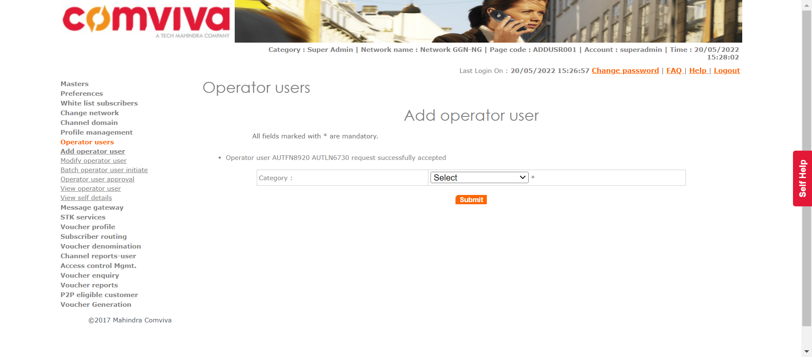
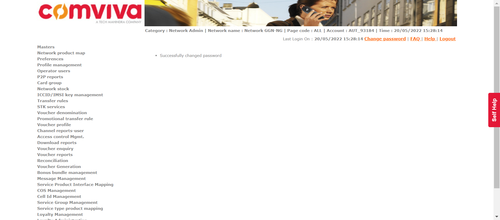
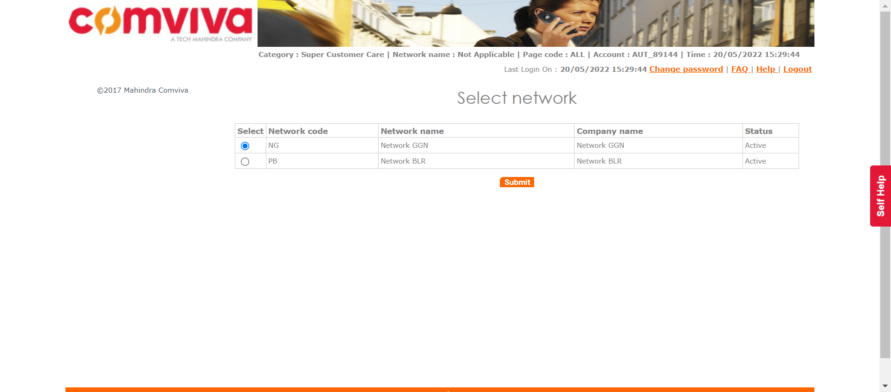

| Status | Timestamp | Details |
|---|---|---|
| info_outline | 3:32:32 PM | Entered divisionManagement() |
| info_outline | 3:32:32 PM | Trying to get User with Access: DIVISIONMGMT |
| low_priority | 3:32:32 PM | java.lang.NullPointerException at com.utils.ExcelUtility.getCellData(ExcelUtility.java:311) at com.classes.UserAccess.getUserWithAccess(UserAccess.java:63) at com.Features.DivisionDeptManagment.divisionManagement(DivisionDeptManagment.java:79) at com.testscripts.prerequisites.PreRequisite_DivisionManagment.Test_AddDivisionDepartment(PreRequisite_DivisionManagment.java:27) at sun.reflect.NativeMethodAccessorImpl.invoke0(Native Method) at sun.reflect.NativeMethodAccessorImpl.invoke(Unknown Source) at sun.reflect.DelegatingMethodAccessorImpl.invoke(Unknown Source) at java.lang.reflect.Method.invoke(Unknown Source) at org.testng.internal.MethodInvocationHelper.invokeMethod(MethodInvocationHelper.java:124) at org.testng.internal.Invoker.invokeMethod(Invoker.java:580) at org.testng.internal.Invoker.invokeTestMethod(Invoker.java:716) at org.testng.internal.Invoker.invokeTestMethods(Invoker.java:988) at org.testng.internal.TestMethodWorker.invokeTestMethods(TestMethodWorker.java:125) at org.testng.internal.TestMethodWorker.run(TestMethodWorker.java:109) at org.testng.TestRunner.privateRun(TestRunner.java:648) at org.testng.TestRunner.run(TestRunner.java:505) at org.testng.SuiteRunner.runTest(SuiteRunner.java:455) at org.testng.SuiteRunner.runSequentially(SuiteRunner.java:450) at org.testng.SuiteRunner.privateRun(SuiteRunner.java:415) at org.testng.SuiteRunner.run(SuiteRunner.java:364) at org.testng.SuiteRunnerWorker.runSuite(SuiteRunnerWorker.java:52) at org.testng.SuiteRunnerWorker.run(SuiteRunnerWorker.java:84) at org.testng.TestNG.runSuitesSequentially(TestNG.java:1208) at org.testng.TestNG.runSuitesLocally(TestNG.java:1137) at org.testng.TestNG.runSuites(TestNG.java:1049) at org.testng.TestNG.run(TestNG.java:1017) at org.testng.remote.AbstractRemoteTestNG.run(AbstractRemoteTestNG.java:115) at org.testng.remote.RemoteTestNG.initAndRun(RemoteTestNG.java:251) at org.testng.remote.RemoteTestNG.main(RemoteTestNG.java:77) |
| low_priority | 3:32:32 PM | java.lang.NullPointerException at com.utils.ExcelUtility.getCellData(ExcelUtility.java:311) at com.classes.UserAccess.getUserWithAccess(UserAccess.java:64) at com.Features.DivisionDeptManagment.divisionManagement(DivisionDeptManagment.java:79) at com.testscripts.prerequisites.PreRequisite_DivisionManagment.Test_AddDivisionDepartment(PreRequisite_DivisionManagment.java:27) at sun.reflect.NativeMethodAccessorImpl.invoke0(Native Method) at sun.reflect.NativeMethodAccessorImpl.invoke(Unknown Source) at sun.reflect.DelegatingMethodAccessorImpl.invoke(Unknown Source) at java.lang.reflect.Method.invoke(Unknown Source) at org.testng.internal.MethodInvocationHelper.invokeMethod(MethodInvocationHelper.java:124) at org.testng.internal.Invoker.invokeMethod(Invoker.java:580) at org.testng.internal.Invoker.invokeTestMethod(Invoker.java:716) at org.testng.internal.Invoker.invokeTestMethods(Invoker.java:988) at org.testng.internal.TestMethodWorker.invokeTestMethods(TestMethodWorker.java:125) at org.testng.internal.TestMethodWorker.run(TestMethodWorker.java:109) at org.testng.TestRunner.privateRun(TestRunner.java:648) at org.testng.TestRunner.run(TestRunner.java:505) at org.testng.SuiteRunner.runTest(SuiteRunner.java:455) at org.testng.SuiteRunner.runSequentially(SuiteRunner.java:450) at org.testng.SuiteRunner.privateRun(SuiteRunner.java:415) at org.testng.SuiteRunner.run(SuiteRunner.java:364) at org.testng.SuiteRunnerWorker.runSuite(SuiteRunnerWorker.java:52) at org.testng.SuiteRunnerWorker.run(SuiteRunnerWorker.java:84) at org.testng.TestNG.runSuitesSequentially(TestNG.java:1208) at org.testng.TestNG.runSuitesLocally(TestNG.java:1137) at org.testng.TestNG.runSuites(TestNG.java:1049) at org.testng.TestNG.run(TestNG.java:1017) at org.testng.remote.AbstractRemoteTestNG.run(AbstractRemoteTestNG.java:115) at org.testng.remote.RemoteTestNG.initAndRun(RemoteTestNG.java:251) at org.testng.remote.RemoteTestNG.main(RemoteTestNG.java:77) |
| info_outline | 3:32:32 PM | Entered :: getUserNameByLogin() |
| info_outline | 3:32:32 PM | select USER_NAME from users where LOGIN_ID = 'superadmin' |
| info_outline | 3:32:32 PM | Query Repository Returns: USER_NAME (Super Admin) |
| info_outline | 3:32:32 PM | UserAccess Returns: PARENT_NAME(Super Admin) | CATEGORY_NAME(Super Admin) | USER_NAME(Super Admin) | LOGIN_ID(superadmin) | PASSWORD(1357) |
| info_outline | 3:32:32 PM | Trying to select Language |
| info_outline | 3:32:32 PM | Language selected successfully as: English |
| info_outline | 3:32:32 PM | Trying to enter Login ID |
| info_outline | 3:32:32 PM | Login ID entered successfully as: superadmin |
| info_outline | 3:32:32 PM | Trying to enter Password |
| info_outline | 3:32:32 PM | Password entered successfully as: 1357 |
| info_outline | 3:32:32 PM | Trying to click Submit Button |
| info_outline | 3:32:34 PM | Submit button clicked successfully |
| info_outline | 3:32:34 PM | Trying to click Relogin Button |
| info_outline | 3:32:34 PM | Relogin Button Not Found |
| info_outline | 3:32:34 PM | Multiple Networks page exists: true |
| info_outline | 3:32:34 PM | Trying to click Masters link |
| info_outline | 3:32:35 PM | Master Link clicked successfully |
| info_outline | 3:32:35 PM | Trying to click Division Management link |
| info_outline | 3:32:36 PM | Division Management link clicked successfully |
| info_outline | 3:32:36 PM | Trying to click Add Button |
| info_outline | 3:32:37 PM | Add Button clicked successfully |
| info_outline | 3:32:37 PM | Trying to select Division Type |
| info_outline | 3:32:37 PM | Division Type selected as OPERATOR |
| info_outline | 3:32:37 PM | Trying to enter Division Name |
| info_outline | 3:32:37 PM | Division Name entered as: AUTDIV17724 |
| info_outline | 3:32:37 PM | Trying to enter Division Short Code |
| info_outline | 3:32:37 PM | Division Short Code entered as: AUTDIV17724 |
| info_outline | 3:32:37 PM | Trying to select Status |
| info_outline | 3:32:37 PM | Status selected successfully |
| info_outline | 3:32:37 PM | Trying to click Submit Button |
| info_outline | 3:32:38 PM | Submit Button clicked successfully |
| info_outline | 3:32:38 PM | Trying to click Confirm Button |
| info_outline | 3:32:39 PM | Confirm Button clicked successfully |
| info_outline | 3:32:39 PM | Trying to fetch Success Message |
| info_outline | 3:32:39 PM | Success Message Returned: Divison added successfully |
| info_outline | 3:32:39 PM | Exited divisionManagement() |
| Status | Timestamp | Details |
|---|---|---|
| info_outline | 3:32:39 PM | Entered departmentManagement() |
| info_outline | 3:32:39 PM | Trying to get User with Access: DIVISIONMGMT |
| low_priority | 3:32:39 PM | java.lang.NullPointerException at com.utils.ExcelUtility.getCellData(ExcelUtility.java:311) at com.classes.UserAccess.getUserWithAccess(UserAccess.java:63) at com.Features.DivisionDeptManagment.departmentManagement(DivisionDeptManagment.java:159) at com.testscripts.prerequisites.PreRequisite_DivisionManagment.Test_AddDivisionDepartment(PreRequisite_DivisionManagment.java:31) at sun.reflect.NativeMethodAccessorImpl.invoke0(Native Method) at sun.reflect.NativeMethodAccessorImpl.invoke(Unknown Source) at sun.reflect.DelegatingMethodAccessorImpl.invoke(Unknown Source) at java.lang.reflect.Method.invoke(Unknown Source) at org.testng.internal.MethodInvocationHelper.invokeMethod(MethodInvocationHelper.java:124) at org.testng.internal.Invoker.invokeMethod(Invoker.java:580) at org.testng.internal.Invoker.invokeTestMethod(Invoker.java:716) at org.testng.internal.Invoker.invokeTestMethods(Invoker.java:988) at org.testng.internal.TestMethodWorker.invokeTestMethods(TestMethodWorker.java:125) at org.testng.internal.TestMethodWorker.run(TestMethodWorker.java:109) at org.testng.TestRunner.privateRun(TestRunner.java:648) at org.testng.TestRunner.run(TestRunner.java:505) at org.testng.SuiteRunner.runTest(SuiteRunner.java:455) at org.testng.SuiteRunner.runSequentially(SuiteRunner.java:450) at org.testng.SuiteRunner.privateRun(SuiteRunner.java:415) at org.testng.SuiteRunner.run(SuiteRunner.java:364) at org.testng.SuiteRunnerWorker.runSuite(SuiteRunnerWorker.java:52) at org.testng.SuiteRunnerWorker.run(SuiteRunnerWorker.java:84) at org.testng.TestNG.runSuitesSequentially(TestNG.java:1208) at org.testng.TestNG.runSuitesLocally(TestNG.java:1137) at org.testng.TestNG.runSuites(TestNG.java:1049) at org.testng.TestNG.run(TestNG.java:1017) at org.testng.remote.AbstractRemoteTestNG.run(AbstractRemoteTestNG.java:115) at org.testng.remote.RemoteTestNG.initAndRun(RemoteTestNG.java:251) at org.testng.remote.RemoteTestNG.main(RemoteTestNG.java:77) |
| low_priority | 3:32:39 PM | java.lang.NullPointerException at com.utils.ExcelUtility.getCellData(ExcelUtility.java:311) at com.classes.UserAccess.getUserWithAccess(UserAccess.java:64) at com.Features.DivisionDeptManagment.departmentManagement(DivisionDeptManagment.java:159) at com.testscripts.prerequisites.PreRequisite_DivisionManagment.Test_AddDivisionDepartment(PreRequisite_DivisionManagment.java:31) at sun.reflect.NativeMethodAccessorImpl.invoke0(Native Method) at sun.reflect.NativeMethodAccessorImpl.invoke(Unknown Source) at sun.reflect.DelegatingMethodAccessorImpl.invoke(Unknown Source) at java.lang.reflect.Method.invoke(Unknown Source) at org.testng.internal.MethodInvocationHelper.invokeMethod(MethodInvocationHelper.java:124) at org.testng.internal.Invoker.invokeMethod(Invoker.java:580) at org.testng.internal.Invoker.invokeTestMethod(Invoker.java:716) at org.testng.internal.Invoker.invokeTestMethods(Invoker.java:988) at org.testng.internal.TestMethodWorker.invokeTestMethods(TestMethodWorker.java:125) at org.testng.internal.TestMethodWorker.run(TestMethodWorker.java:109) at org.testng.TestRunner.privateRun(TestRunner.java:648) at org.testng.TestRunner.run(TestRunner.java:505) at org.testng.SuiteRunner.runTest(SuiteRunner.java:455) at org.testng.SuiteRunner.runSequentially(SuiteRunner.java:450) at org.testng.SuiteRunner.privateRun(SuiteRunner.java:415) at org.testng.SuiteRunner.run(SuiteRunner.java:364) at org.testng.SuiteRunnerWorker.runSuite(SuiteRunnerWorker.java:52) at org.testng.SuiteRunnerWorker.run(SuiteRunnerWorker.java:84) at org.testng.TestNG.runSuitesSequentially(TestNG.java:1208) at org.testng.TestNG.runSuitesLocally(TestNG.java:1137) at org.testng.TestNG.runSuites(TestNG.java:1049) at org.testng.TestNG.run(TestNG.java:1017) at org.testng.remote.AbstractRemoteTestNG.run(AbstractRemoteTestNG.java:115) at org.testng.remote.RemoteTestNG.initAndRun(RemoteTestNG.java:251) at org.testng.remote.RemoteTestNG.main(RemoteTestNG.java:77) |
| info_outline | 3:32:39 PM | Entered :: getUserNameByLogin() |
| info_outline | 3:32:39 PM | select USER_NAME from users where LOGIN_ID = 'superadmin' |
| info_outline | 3:32:39 PM | Query Repository Returns: USER_NAME (Super Admin) |
| info_outline | 3:32:39 PM | UserAccess Returns: PARENT_NAME(Super Admin) | CATEGORY_NAME(Super Admin) | USER_NAME(Super Admin) | LOGIN_ID(superadmin) | PASSWORD(1357) |
| info_outline | 3:32:39 PM | Trying to select Language |
| info_outline | 3:32:39 PM | Language selected successfully as: English |
| info_outline | 3:32:39 PM | Trying to enter Login ID |
| info_outline | 3:32:40 PM | Login ID entered successfully as: superadmin |
| info_outline | 3:32:40 PM | Trying to enter Password |
| info_outline | 3:32:40 PM | Password entered successfully as: 1357 |
| info_outline | 3:32:40 PM | Trying to click Submit Button |
| info_outline | 3:32:40 PM | Submit button clicked successfully |
| info_outline | 3:32:41 PM | Trying to click Relogin Button |
| info_outline | 3:32:41 PM | Relogin Button Not Found |
| info_outline | 3:32:41 PM | Multiple Networks page exists: true |
| info_outline | 3:32:41 PM | Trying to click Masters link |
| info_outline | 3:32:42 PM | Master Link clicked successfully |
| info_outline | 3:32:42 PM | Trying to click Department Managament link |
| info_outline | 3:32:43 PM | Department management link clicked successfully |
| info_outline | 3:32:43 PM | Trying to select Division Type |
| info_outline | 3:32:43 PM | Division Type OPERATOR selected successfully |
| info_outline | 3:32:43 PM | Trying to select Division |
| info_outline | 3:32:43 PM | Division selected as: AUTDIV17724 |
| info_outline | 3:32:43 PM | Trying to click Submit Button |
| info_outline | 3:32:45 PM | Submit Button clicked successfully |
| info_outline | 3:32:45 PM | Trying to click Add Button |
| info_outline | 3:32:45 PM | Add Button clicked successfully |
| info_outline | 3:32:45 PM | Trying to enter Department Name |
| info_outline | 3:32:46 PM | Department name entered as: AUTDEPT460495 |
| info_outline | 3:32:46 PM | Trying to enter Department Short Code |
| info_outline | 3:32:46 PM | Department Short Code entered as: AUT1237 |
| info_outline | 3:32:46 PM | Trying to click Submit Button |
| info_outline | 3:32:47 PM | Submit Button clicked successfully |
| info_outline | 3:32:47 PM | Trying to click Confirm Button |
| info_outline | 3:32:48 PM | Confirm Button clicked successfully |
| info_outline | 3:32:48 PM | Trying to fetch Success Message |
| info_outline | 3:32:48 PM | Success Message Returned: Department added successfully |
| info_outline | 3:32:48 PM | Exited departmentManagement() |
| Status | Timestamp | Details |
|---|---|---|
| info_outline | 3:32:53 PM | Entered operatorUserInitiate(Super Admin, Network Admin) |
| info_outline | 3:32:53 PM | Login ID Found as: superadmin |
| info_outline | 3:32:53 PM | Password Found as: 1357 |
| info_outline | 3:32:53 PM | Trying to select Language |
| info_outline | 3:32:54 PM | Language selected successfully as: English |
| info_outline | 3:32:54 PM | Trying to enter Login ID |
| info_outline | 3:32:54 PM | Login ID entered successfully as: superadmin |
| info_outline | 3:32:54 PM | Trying to enter Password |
| info_outline | 3:32:54 PM | Password entered successfully as: 1357 |
| info_outline | 3:32:54 PM | Trying to click Submit Button |
| info_outline | 3:32:55 PM | Submit button clicked successfully |
| info_outline | 3:32:55 PM | Trying to click Relogin Button |
| info_outline | 3:32:55 PM | Relogin Button Not Found |
| info_outline | 3:32:55 PM | Multiple Networks page exists: true |
| info_outline | 3:32:57 PM | User clicked Operator Users. |
| info_outline | 3:32:57 PM | Trying to click add Operator User Link |
| info_outline | 3:32:57 PM | Add Operator User link clicked successfully |
| info_outline | 3:32:57 PM | Trying to select Category |
| info_outline | 3:32:57 PM | Category selected successfully |
| info_outline | 3:32:57 PM | Trying to click Submit Button |
| info_outline | 3:32:58 PM | Submit Button clicked successfully |
| info_outline | 3:32:58 PM | Trying to enter First Name |
| info_outline | 3:32:58 PM | First Name entered as: AUTFN8920 |
| info_outline | 3:32:58 PM | Trying to enter Last Name |
| info_outline | 3:32:58 PM | Last Name entered as: AUTLN6730 |
| info_outline | 3:32:58 PM | Trying to enter User Name |
| info_outline | 3:32:58 PM | User Name field not found |
| info_outline | 3:32:58 PM | Trying to enter Short Name |
| info_outline | 3:32:58 PM | Short Name entered as: AUTSN2058 |
| info_outline | 3:32:58 PM | Trying to select User Name Prefix |
| info_outline | 3:32:59 PM | User Name prefix selected successfully |
| info_outline | 3:32:59 PM | Trying to enter Subscriber Code |
| info_outline | 3:32:59 PM | Subscriber Code entered as: 071628 |
| info_outline | 3:32:59 PM | Trying to select Status |
| info_outline | 3:32:59 PM | Status drop down not found |
| info_outline | 3:32:59 PM | GenerateMSISDN class Returns: Remaining MSISDNLength (13) |
| info_outline | 3:32:59 PM | The generated MSISDN is ::729577652080343 |
| info_outline | 3:32:59 PM | Entered :: checkForUniqueMSISDN() |
| info_outline | 3:32:59 PM | Query Repository Returns: MSISDNStatus (N) |
| info_outline | 3:32:59 PM | The generated External Code is ::087027121 |
| info_outline | 3:32:59 PM | Entered :: checkForUniqueEXTCODE() |
| info_outline | 3:32:59 PM | Query Repository Returns: ExternalCodeStatus (N) |
| info_outline | 3:32:59 PM | Trying to enter External Code |
| info_outline | 3:32:59 PM | External Code entered as: 087027121 |
| info_outline | 3:32:59 PM | Trying to enter MobileNumber |
| info_outline | 3:32:59 PM | Mobile Number entered as: 729577652080343 |
| info_outline | 3:32:59 PM | Trying to enter Contact Number |
| info_outline | 3:32:59 PM | Contact No. entered as: 050227 |
| info_outline | 3:32:59 PM | Trying to select Division |
| info_outline | 3:32:59 PM | Division selected as: AUTDIV17724 |
| info_outline | 3:32:59 PM | Trying to select Department |
| info_outline | 3:33:00 PM | Department selected as: AUTDEPT460495 |
| info_outline | 3:33:00 PM | Trying to enter Address1 |
| info_outline | 3:33:00 PM | Address1 entered as: Add15393 |
| info_outline | 3:33:00 PM | Trying to enter Address2 |
| info_outline | 3:33:00 PM | Address2 entered as: Add23383 |
| info_outline | 3:33:00 PM | Trying to enter City |
| info_outline | 3:33:00 PM | City entered as: City4859 |
| info_outline | 3:33:00 PM | Trying to enter State |
| info_outline | 3:33:00 PM | State entered as: State4553 |
| info_outline | 3:33:00 PM | Trying to enter Country |
| info_outline | 3:33:00 PM | Country entered as: Country19 |
| info_outline | 3:33:00 PM | Trying to enter Email ID |
| info_outline | 3:33:00 PM | Email ID entered as: iegel@mail.com |
| info_outline | 3:33:00 PM | The generated Login ID is ::AUT_93184 |
| info_outline | 3:33:00 PM | Entered :: checkForUniqueLoginID() |
| info_outline | 3:33:00 PM | Query Repository Returns: LoginIDStatus (N) |
| info_outline | 3:33:00 PM | Trying to enter Login ID |
| info_outline | 3:33:00 PM | Login ID entered as: AUT_93184 |
| info_outline | 3:33:00 PM | Trying to check if Assign Geographies link exist |
| info_outline | 3:33:00 PM | Assign Geographies link found |
| info_outline | 3:33:00 PM | Trying to click Assign Geographies link |
| info_outline | 3:33:00 PM | Assign Geographies link clicked successfully |
| info_outline | 3:33:04 PM | Trying to select Geography |
| info_outline | 3:33:04 PM | Geography selected successfully |
| info_outline | 3:33:04 PM | Trying to click Add button |
| info_outline | 3:33:05 PM | Add button for geography clicked successfully |
| info_outline | 3:33:05 PM | Geographies has been assigned to the user. |
| info_outline | 3:33:05 PM | ---- Window Handler ---- |
| info_outline | 3:33:07 PM | Trying to check if Assign Network link exists |
| info_outline | 3:33:08 PM | Assign Network link not found |
| info_outline | 3:33:08 PM | Assign Network Link not found |
| info_outline | 3:33:08 PM | ---- Window Handler ---- |
| info_outline | 3:33:10 PM | Trying to check if Assign Roles link exist |
| info_outline | 3:33:11 PM | Trying to click Assign Roles |
| info_outline | 3:33:11 PM | Assign Roles clicked successfully |
| info_outline | 3:33:11 PM | Trying to check ALL option for assign Roles |
| info_outline | 3:33:14 PM | ALL option selected for Assign Roles |
| info_outline | 3:33:14 PM | Trying to click Add button |
| info_outline | 3:33:16 PM | Add button clicked successfully |
| info_outline | 3:33:17 PM | ---- Window Handler ---- |
| info_outline | 3:33:19 PM | Trying to check if Assign Domain link exists |
| info_outline | 3:33:19 PM | Assign Domains link not found |
| info_outline | 3:33:20 PM | Assign Domains link not found |
| info_outline | 3:33:20 PM | ---- Window Handler ---- |
| info_outline | 3:33:22 PM | Trying to check if Assign Products link exist |
| info_outline | 3:33:22 PM | Assign Products link not found |
| info_outline | 3:33:23 PM | Assign Products link not found |
| info_outline | 3:33:23 PM | ---- Window Handler ---- |
| info_outline | 3:33:25 PM | Trying to click 'assign voucher type' link. |
| info_outline | 3:33:26 PM | 'assign voucher type' link clicked successfully |
| info_outline | 3:33:26 PM | Trying to check ALL option for voucher type. |
| info_outline | 3:33:26 PM | ALL option for Voucher types selected successfully |
| info_outline | 3:33:26 PM | Trying to click Add button |
| info_outline | 3:33:27 PM | Add button clicked successfully |
| info_outline | 3:33:27 PM | ---- Window Handler ---- |
| info_outline | 3:33:30 PM | Trying to check if Assign Phone Number link exist |
| info_outline | 3:33:30 PM | Assign phone number link not found |
| info_outline | 3:33:30 PM | Assign Phone Numbers link not found |
| info_outline | 3:33:30 PM | ---- Window Handler ---- |
| info_outline | 3:33:33 PM | Trying to check if Assign Services exists |
| info_outline | 3:33:33 PM | Assign Services link not found |
| info_outline | 3:33:33 PM | Assign Services link not found |
| info_outline | 3:33:33 PM | ---- Window Handler ---- |
| info_outline | 3:33:36 PM | Trying to click Assign Voucher Type link |
| info_outline | 3:33:36 PM | Assign voucher Type link clicked successfully |
| info_outline | 3:33:37 PM | Trying to click ALL Voucher Type |
| info_outline | 3:33:37 PM | All Voucher Types clicked successfully for Assign Voucher Type |
| info_outline | 3:33:37 PM | Trying to click Add button for Assign Voucher Type |
| info_outline | 3:33:37 PM | Add button for assign voucher Type clicked successfully |
| info_outline | 3:33:38 PM | ---- Window Handler ---- |
| info_outline | 3:33:40 PM | Trying to click Voucher Segment Type link |
| info_outline | 3:33:40 PM | Assign voucher Segment link clicked successfully |
| info_outline | 3:33:41 PM | Trying to click ALL Voucher Segment |
| info_outline | 3:33:41 PM | All Voucher Segments clicked successfully for Assign Voucher Type |
| info_outline | 3:33:41 PM | Trying to click Add button for Assign Voucher Type |
| info_outline | 3:33:41 PM | Add button for assign voucher Segment clicked successfully |
| info_outline | 3:33:42 PM | ---- Window Handler ---- |
| info_outline | 3:33:44 PM | Trying to check if Enter Password field exist |
| info_outline | 3:33:44 PM | Enter Password field found |
| info_outline | 3:33:44 PM | Trying to enter Password |
| info_outline | 3:33:44 PM | Password Entered as: Com@1357 |
| info_outline | 3:33:44 PM | Trying to enter Confirm Password |
| info_outline | 3:33:44 PM | Confirm Password Entered as: Com@1357 |
| info_outline | 3:33:44 PM | Trying to click Save button |
| info_outline | 3:33:45 PM | Save Button clicked successfully |
| info_outline | 3:33:45 PM | Trying to click Confirm button. |
| info_outline | 3:33:46 PM | Confirm Button clicked successfully |
| info_outline | 3:33:46 PM | Trying to fetch success or reject message. |
| info_outline | 3:33:46 PM | Message fetched as :: Operator user AUTFN8920 AUTLN6730 request successfully accepted |
| info_outline | 3:33:46 PM | Exited operatorUserInitiate() |
| info_outline | 3:33:46 PM | assertNotNull: Message Found. |
| info_outline | 3:33:46 PM |  |
| Status | Timestamp | Details |
|---|---|---|
| info_outline | 3:33:46 PM | Entered approveUser(Super Admin) |
| info_outline | 3:33:46 PM | Entered :: getSystemPreference(OPT_USR_APRL_LEVEL) |
| info_outline | 3:33:47 PM | Query Repository Returns: DEFAULT_VALUE (1) |
| info_outline | 3:33:47 PM | Login ID Found as: superadmin |
| info_outline | 3:33:47 PM | Password Found as: 1357 |
| info_outline | 3:33:47 PM | Trying to select Language |
| info_outline | 3:33:47 PM | Language selected successfully as: English |
| info_outline | 3:33:47 PM | Trying to enter Login ID |
| info_outline | 3:33:47 PM | Login ID entered successfully as: superadmin |
| info_outline | 3:33:47 PM | Trying to enter Password |
| info_outline | 3:33:47 PM | Password entered successfully as: 1357 |
| info_outline | 3:33:47 PM | Trying to click Submit Button |
| info_outline | 3:33:48 PM | Submit button clicked successfully |
| info_outline | 3:33:48 PM | Trying to click Relogin Button |
| info_outline | 3:33:48 PM | Relogin Button Not Found |
| info_outline | 3:33:48 PM | Multiple Networks page exists: true |
| info_outline | 3:33:50 PM | User clicked Operator Users. |
| info_outline | 3:33:50 PM | Trying to click Operator User Approval Link |
| info_outline | 3:33:50 PM | Operator User approval link clicked successfully |
| info_outline | 3:33:50 PM | Trying to Enter intiated Login ID: AUT_93184 |
| info_outline | 3:33:50 PM | Login ID entered successfully |
| info_outline | 3:33:50 PM | Trying to click approval submit button |
| info_outline | 3:33:51 PM | First Submit button clicked successfully |
| info_outline | 3:33:51 PM | Trying to click Submit button |
| info_outline | 3:33:52 PM | Second Submit button clicked successfully |
| info_outline | 3:33:52 PM | Tring to click Approve button |
| info_outline | 3:33:52 PM | Approve button clicked successfully |
| info_outline | 3:33:52 PM | Tring to click Confirm button |
| info_outline | 3:33:53 PM | Confirm button clicked successfully |
| info_outline | 3:33:53 PM | Trying to fetch success or reject message. |
| info_outline | 3:33:53 PM | Message fetched as :: User AUTFN8920 AUTLN6730 successfully approved. |
| info_outline | 3:33:53 PM | User clicked Logout. |
| info_outline | 3:33:53 PM | Exited approveUser() |
| Status | Timestamp | Details |
|---|---|---|
| info_outline | 3:33:53 PM | Entered changeUserFirstTimePassword() |
| info_outline | 3:33:53 PM | Entered :: getSystemPreference(AUTO_PWD_GENERATE_ALLOW) |
| info_outline | 3:33:53 PM | Query Repository Returns: DEFAULT_VALUE (false) |
| info_outline | 3:33:53 PM | Password field exist |
| info_outline | 3:33:54 PM | Trying to select Language |
| info_outline | 3:33:54 PM | Language selected successfully as: English |
| info_outline | 3:33:54 PM | Trying to enter Login ID |
| info_outline | 3:33:54 PM | Login ID entered successfully as: AUT_93184 |
| info_outline | 3:33:54 PM | Trying to enter Password |
| info_outline | 3:33:54 PM | Password entered successfully as: Com@1357 |
| info_outline | 3:33:54 PM | Trying to click Submit Button |
| info_outline | 3:33:55 PM | Submit button clicked successfully |
| info_outline | 3:33:55 PM | Trying to click Relogin Button |
| info_outline | 3:33:55 PM | Relogin Button Not Found |
| info_outline | 3:33:55 PM | Trying to enter Old Password |
| info_outline | 3:33:57 PM | Old Password Entered successfully:Com@1357 |
| info_outline | 3:33:57 PM | Trying to enter New Password |
| info_outline | 3:33:57 PM | New Password Entered successfully:Com@2468 |
| info_outline | 3:33:57 PM | Trying to enter Confirm Password |
| info_outline | 3:33:57 PM | Confirm Password Entered successfully:Com@2468 |
| info_outline | 3:33:57 PM | Trying to click Submit Button |
| info_outline | 3:33:58 PM | Submit Button clicked successfully |
| info_outline | 3:33:58 PM | Exited changeUserFirstTimePassword() |
| info_outline | 3:33:58 PM | Trying to fetch success message. |
| info_outline | 3:33:58 PM | Message fetched as :: Successfully changed password |
| info_outline | 3:33:58 PM | Expected: Successfully changed password |
| info_outline | 3:33:58 PM | Message Validation Success |
| info_outline | 3:33:58 PM |  |
| Status | Timestamp | Details |
|---|---|---|
| info_outline | 3:34:03 PM | Entered addGeographicalDomain(Zone, Zone) |
| info_outline | 3:34:03 PM | Trying to get User with Access: VIEWGRPHDOMAIN |
| low_priority | 3:34:03 PM | java.lang.NullPointerException |
| info_outline | 3:34:03 PM | Entered :: getUserNameByLogin() |
| info_outline | 3:34:03 PM | select USER_NAME from users where LOGIN_ID = 'AUT_93184' |
| info_outline | 3:34:03 PM | Query Repository Returns: USER_NAME (AUTFN8920 AUTLN6730) |
| info_outline | 3:34:03 PM | UserAccess Returns: PARENT_NAME(Super Admin) | CATEGORY_NAME(Network Admin) | USER_NAME(AUTFN8920 AUTLN6730) | LOGIN_ID(AUT_93184) | PASSWORD(Com@2468) |
| info_outline | 3:34:03 PM | Trying to select Language |
| info_outline | 3:34:03 PM | Language selected successfully as: English |
| info_outline | 3:34:03 PM | Trying to enter Login ID |
| info_outline | 3:34:04 PM | Login ID entered successfully as: AUT_93184 |
| info_outline | 3:34:04 PM | Trying to enter Password |
| info_outline | 3:34:04 PM | Password entered successfully as: Com@2468 |
| info_outline | 3:34:04 PM | Trying to click Submit Button |
| info_outline | 3:34:05 PM | Submit button clicked successfully |
| info_outline | 3:34:05 PM | Trying to click Relogin Button |
| info_outline | 3:34:05 PM | Relogin Button Not Found |
| info_outline | 3:34:05 PM | Multiple Networks page exists: false |
| info_outline | 3:34:05 PM | Only single Network code exist: NG |
| info_outline | 3:34:05 PM | Multiple Networks page exists: false |
| info_outline | 3:34:05 PM | Only single Network code exist: NG |
| info_outline | 3:34:06 PM | User clicked Masters. |
| info_outline | 3:34:07 PM | User clicked Geographical Domain Management. |
| info_outline | 3:34:07 PM | User selected Domain:Zone |
| info_outline | 3:34:08 PM | User clicked submit Button |
| info_outline | 3:34:09 PM | User clicked Add Button. |
| info_outline | 3:34:09 PM | The generated Domain Code is ::AUT4jnd |
| info_outline | 3:34:09 PM | The generated Domain Name is ::AUTi9G4b |
| info_outline | 3:34:09 PM | The generated Domain Short Name is ::AUT0J6 |
| info_outline | 3:34:09 PM | Entered :: checkUniqueDomain() |
| info_outline | 3:34:09 PM | Query Repository Returns: Unique Domain Code / Name / ShortName Status (N) |
| info_outline | 3:34:09 PM | User entered GrphDomainCode: AUT4jnd |
| info_outline | 3:34:09 PM | User entered GrphDomainName: AUTi9G4b |
| info_outline | 3:34:10 PM | User entered GrphDomainShortName: AUT0J6 |
| info_outline | 3:34:10 PM | User entered Description: domainType Name |
| info_outline | 3:34:10 PM | 'Is Default' Selected |
| info_outline | 3:34:11 PM | User clicked Add Button. |
| info_outline | 3:34:12 PM | User clicked Confirm Button. |
| info_outline | 3:34:12 PM | No error Message found: org.openqa.selenium.NoSuchElementException: no such element: Unable to locate element: {"method":"xpath","selector":"//tr/td/ol/li"} (Session info: chrome=101.0.4951.67) For documentation on this error, please visit: http://seleniumhq.org/exceptions/no_such_element.html Build info: version: '3.10.0', revision: '176b4a9', time: '2018-03-02T19:03:16.397Z' System info: host: 'MCKL-20005142', ip: '192.168.1.38', os.name: 'Windows 10', os.arch: 'amd64', os.version: '10.0', java.version: '1.8.0_291' Driver info: org.openqa.selenium.chrome.ChromeDriver Capabilities {acceptInsecureCerts: false, browserName: chrome, browserVersion: 101.0.4951.67, chrome: {chromedriverVersion: 101.0.4951.41 (93c720db8323..., userDataDir: C:\Users\SOURAB~1.AWA\AppDa...}, goog:chromeOptions: {debuggerAddress: localhost:58003}, javascriptEnabled: true, networkConnectionEnabled: false, pageLoadStrategy: normal, platform: WINDOWS, platformName: WINDOWS, proxy: Proxy(), setWindowRect: true, strictFileInteractability: false, timeouts: {implicit: 0, pageLoad: 300000, script: 30000}, unhandledPromptBehavior: dismiss and notify, webauthn:extension:credBlob: true, webauthn:extension:largeBlob: true, webauthn:virtualAuthenticators: true} Session ID: 781e37f0268ae6e89116fc0413a29fdf *** Element info: {Using=xpath, value=//tr/td/ol/li} |
| info_outline | 3:34:12 PM | Added a: Zone |
| info_outline | 3:34:12 PM | Exited addGeographicalDomain() |
| Status | Timestamp | Details |
|---|---|---|
| info_outline | 3:34:12 PM | Entered addGeographicalDomain(Zone, Area) |
| info_outline | 3:34:12 PM | Trying to get User with Access: VIEWGRPHDOMAIN |
| low_priority | 3:34:12 PM | java.lang.NullPointerException |
| info_outline | 3:34:12 PM | Entered :: getUserNameByLogin() |
| info_outline | 3:34:12 PM | select USER_NAME from users where LOGIN_ID = 'AUT_93184' |
| info_outline | 3:34:12 PM | Query Repository Returns: USER_NAME (AUTFN8920 AUTLN6730) |
| info_outline | 3:34:12 PM | UserAccess Returns: PARENT_NAME(Super Admin) | CATEGORY_NAME(Network Admin) | USER_NAME(AUTFN8920 AUTLN6730) | LOGIN_ID(AUT_93184) | PASSWORD(Com@2468) |
| info_outline | 3:34:13 PM | Trying to select Language |
| info_outline | 3:34:13 PM | Language selected successfully as: English |
| info_outline | 3:34:13 PM | Trying to enter Login ID |
| info_outline | 3:34:13 PM | Login ID entered successfully as: AUT_93184 |
| info_outline | 3:34:13 PM | Trying to enter Password |
| info_outline | 3:34:13 PM | Password entered successfully as: Com@2468 |
| info_outline | 3:34:13 PM | Trying to click Submit Button |
| info_outline | 3:34:14 PM | Submit button clicked successfully |
| info_outline | 3:34:14 PM | Trying to click Relogin Button |
| info_outline | 3:34:14 PM | Relogin Button Not Found |
| info_outline | 3:34:14 PM | Multiple Networks page exists: false |
| info_outline | 3:34:14 PM | Only single Network code exist: NG |
| info_outline | 3:34:14 PM | Multiple Networks page exists: false |
| info_outline | 3:34:14 PM | Only single Network code exist: NG |
| info_outline | 3:34:15 PM | User clicked Masters. |
| info_outline | 3:34:15 PM | User clicked Geographical Domain Management. |
| info_outline | 3:34:15 PM | User selected Domain:Area |
| info_outline | 3:34:16 PM | User clicked submit Button |
| info_outline | 3:34:17 PM | User clicked submit Button |
| info_outline | 3:34:17 PM | User clicked Add Button. |
| info_outline | 3:34:17 PM | The generated Domain Code is ::AUTEjei |
| info_outline | 3:34:17 PM | The generated Domain Name is ::AUTlo0nl |
| info_outline | 3:34:17 PM | The generated Domain Short Name is ::AUTamb |
| info_outline | 3:34:17 PM | Entered :: checkUniqueDomain() |
| info_outline | 3:34:17 PM | Query Repository Returns: Unique Domain Code / Name / ShortName Status (N) |
| info_outline | 3:34:17 PM | User entered GrphDomainCode: AUTEjei |
| info_outline | 3:34:17 PM | User entered GrphDomainName: AUTlo0nl |
| info_outline | 3:34:18 PM | User entered GrphDomainShortName: AUTamb |
| info_outline | 3:34:18 PM | User entered Description: domainType Name |
| info_outline | 3:34:18 PM | 'Is Default' Selected |
| info_outline | 3:34:18 PM | User clicked Add Button. |
| info_outline | 3:34:19 PM | User clicked Confirm Button. |
| info_outline | 3:34:19 PM | No error Message found: org.openqa.selenium.NoSuchElementException: no such element: Unable to locate element: {"method":"xpath","selector":"//tr/td/ol/li"} (Session info: chrome=101.0.4951.67) For documentation on this error, please visit: http://seleniumhq.org/exceptions/no_such_element.html Build info: version: '3.10.0', revision: '176b4a9', time: '2018-03-02T19:03:16.397Z' System info: host: 'MCKL-20005142', ip: '192.168.1.38', os.name: 'Windows 10', os.arch: 'amd64', os.version: '10.0', java.version: '1.8.0_291' Driver info: org.openqa.selenium.chrome.ChromeDriver Capabilities {acceptInsecureCerts: false, browserName: chrome, browserVersion: 101.0.4951.67, chrome: {chromedriverVersion: 101.0.4951.41 (93c720db8323..., userDataDir: C:\Users\SOURAB~1.AWA\AppDa...}, goog:chromeOptions: {debuggerAddress: localhost:58003}, javascriptEnabled: true, networkConnectionEnabled: false, pageLoadStrategy: normal, platform: WINDOWS, platformName: WINDOWS, proxy: Proxy(), setWindowRect: true, strictFileInteractability: false, timeouts: {implicit: 0, pageLoad: 300000, script: 30000}, unhandledPromptBehavior: dismiss and notify, webauthn:extension:credBlob: true, webauthn:extension:largeBlob: true, webauthn:virtualAuthenticators: true} Session ID: 781e37f0268ae6e89116fc0413a29fdf *** Element info: {Using=xpath, value=//tr/td/ol/li} |
| info_outline | 3:34:19 PM | Added a: Area |
| info_outline | 3:34:19 PM | Exited addGeographicalDomain() |
| Status | Timestamp | Details |
|---|---|---|
| info_outline | 3:34:19 PM | Entered addGeographicalDomain(Zone, Sub Area) |
| info_outline | 3:34:19 PM | Trying to get User with Access: VIEWGRPHDOMAIN |
| low_priority | 3:34:19 PM | java.lang.NullPointerException |
| info_outline | 3:34:19 PM | Entered :: getUserNameByLogin() |
| info_outline | 3:34:19 PM | select USER_NAME from users where LOGIN_ID = 'AUT_93184' |
| info_outline | 3:34:19 PM | Query Repository Returns: USER_NAME (AUTFN8920 AUTLN6730) |
| info_outline | 3:34:19 PM | UserAccess Returns: PARENT_NAME(Super Admin) | CATEGORY_NAME(Network Admin) | USER_NAME(AUTFN8920 AUTLN6730) | LOGIN_ID(AUT_93184) | PASSWORD(Com@2468) |
| info_outline | 3:34:19 PM | Trying to select Language |
| info_outline | 3:34:20 PM | Language selected successfully as: English |
| info_outline | 3:34:20 PM | Trying to enter Login ID |
| info_outline | 3:34:20 PM | Login ID entered successfully as: AUT_93184 |
| info_outline | 3:34:20 PM | Trying to enter Password |
| info_outline | 3:34:20 PM | Password entered successfully as: Com@2468 |
| info_outline | 3:34:20 PM | Trying to click Submit Button |
| info_outline | 3:34:21 PM | Submit button clicked successfully |
| info_outline | 3:34:21 PM | Trying to click Relogin Button |
| info_outline | 3:34:21 PM | Relogin Button Not Found |
| info_outline | 3:34:21 PM | Multiple Networks page exists: false |
| info_outline | 3:34:21 PM | Only single Network code exist: NG |
| info_outline | 3:34:21 PM | Multiple Networks page exists: false |
| info_outline | 3:34:21 PM | Only single Network code exist: NG |
| info_outline | 3:34:21 PM | User clicked Masters. |
| info_outline | 3:34:22 PM | User clicked Geographical Domain Management. |
| info_outline | 3:34:22 PM | User selected Domain:Sub Area |
| info_outline | 3:34:23 PM | User clicked submit Button |
| info_outline | 3:34:23 PM | User clicked submit Button |
| info_outline | 3:34:24 PM | User clicked Add Button. |
| info_outline | 3:34:24 PM | The generated Domain Code is ::AUTlK55 |
| info_outline | 3:34:24 PM | The generated Domain Name is ::AUT256B5 |
| info_outline | 3:34:24 PM | The generated Domain Short Name is ::AUT8n1 |
| info_outline | 3:34:24 PM | Entered :: checkUniqueDomain() |
| info_outline | 3:34:24 PM | Query Repository Returns: Unique Domain Code / Name / ShortName Status (N) |
| info_outline | 3:34:24 PM | User entered GrphDomainCode: AUTlK55 |
| info_outline | 3:34:24 PM | User entered GrphDomainName: AUT256B5 |
| info_outline | 3:34:24 PM | User entered GrphDomainShortName: AUT8n1 |
| info_outline | 3:34:24 PM | User entered Description: domainType Name |
| info_outline | 3:34:24 PM | 'Is Default' Selected |
| info_outline | 3:34:25 PM | User clicked Add Button. |
| info_outline | 3:34:26 PM | User clicked Confirm Button. |
| info_outline | 3:34:26 PM | No error Message found: org.openqa.selenium.NoSuchElementException: no such element: Unable to locate element: {"method":"xpath","selector":"//tr/td/ol/li"} (Session info: chrome=101.0.4951.67) For documentation on this error, please visit: http://seleniumhq.org/exceptions/no_such_element.html Build info: version: '3.10.0', revision: '176b4a9', time: '2018-03-02T19:03:16.397Z' System info: host: 'MCKL-20005142', ip: '192.168.1.38', os.name: 'Windows 10', os.arch: 'amd64', os.version: '10.0', java.version: '1.8.0_291' Driver info: org.openqa.selenium.chrome.ChromeDriver Capabilities {acceptInsecureCerts: false, browserName: chrome, browserVersion: 101.0.4951.67, chrome: {chromedriverVersion: 101.0.4951.41 (93c720db8323..., userDataDir: C:\Users\SOURAB~1.AWA\AppDa...}, goog:chromeOptions: {debuggerAddress: localhost:58003}, javascriptEnabled: true, networkConnectionEnabled: false, pageLoadStrategy: normal, platform: WINDOWS, platformName: WINDOWS, proxy: Proxy(), setWindowRect: true, strictFileInteractability: false, timeouts: {implicit: 0, pageLoad: 300000, script: 30000}, unhandledPromptBehavior: dismiss and notify, webauthn:extension:credBlob: true, webauthn:extension:largeBlob: true, webauthn:virtualAuthenticators: true} Session ID: 781e37f0268ae6e89116fc0413a29fdf *** Element info: {Using=xpath, value=//tr/td/ol/li} |
| info_outline | 3:34:26 PM | Added a: Sub Area |
| info_outline | 3:34:26 PM | Exited addGeographicalDomain() |
| Status | Timestamp | Details |
|---|---|---|
| info_outline | 3:34:29 PM | Entered operatorUserInitiate(Super Admin, Super Customer Care) |
| info_outline | 3:34:29 PM | Login ID Found as: superadmin |
| info_outline | 3:34:29 PM | Password Found as: 1357 |
| info_outline | 3:34:29 PM | Trying to select Language |
| info_outline | 3:34:30 PM | Language selected successfully as: English |
| info_outline | 3:34:30 PM | Trying to enter Login ID |
| info_outline | 3:34:30 PM | Login ID entered successfully as: superadmin |
| info_outline | 3:34:30 PM | Trying to enter Password |
| info_outline | 3:34:30 PM | Password entered successfully as: 1357 |
| info_outline | 3:34:30 PM | Trying to click Submit Button |
| info_outline | 3:34:31 PM | Submit button clicked successfully |
| info_outline | 3:34:31 PM | Trying to click Relogin Button |
| info_outline | 3:34:31 PM | Relogin Button Not Found |
| info_outline | 3:34:31 PM | Multiple Networks page exists: true |
| info_outline | 3:34:32 PM | User clicked Operator Users. |
| info_outline | 3:34:32 PM | Trying to click add Operator User Link |
| info_outline | 3:34:33 PM | Add Operator User link clicked successfully |
| info_outline | 3:34:33 PM | Trying to select Category |
| info_outline | 3:34:33 PM | Category selected successfully |
| info_outline | 3:34:33 PM | Trying to click Submit Button |
| info_outline | 3:34:34 PM | Submit Button clicked successfully |
| info_outline | 3:34:34 PM | Trying to enter First Name |
| info_outline | 3:34:34 PM | First Name entered as: AUTFN3478 |
| info_outline | 3:34:34 PM | Trying to enter Last Name |
| info_outline | 3:34:34 PM | Last Name entered as: AUTLN4458 |
| info_outline | 3:34:34 PM | Trying to enter User Name |
| info_outline | 3:34:34 PM | User Name field not found |
| info_outline | 3:34:34 PM | Trying to enter Short Name |
| info_outline | 3:34:34 PM | Short Name entered as: AUTSN0545 |
| info_outline | 3:34:34 PM | Trying to select User Name Prefix |
| info_outline | 3:34:34 PM | User Name prefix selected successfully |
| info_outline | 3:34:34 PM | Trying to enter Subscriber Code |
| info_outline | 3:34:34 PM | Subscriber Code entered as: 797607 |
| info_outline | 3:34:34 PM | Trying to select Status |
| info_outline | 3:34:34 PM | Status drop down not found |
| info_outline | 3:34:34 PM | GenerateMSISDN class Returns: Remaining MSISDNLength (13) |
| info_outline | 3:34:34 PM | The generated MSISDN is ::729268784578753 |
| info_outline | 3:34:34 PM | Entered :: checkForUniqueMSISDN() |
| info_outline | 3:34:34 PM | Query Repository Returns: MSISDNStatus (N) |
| info_outline | 3:34:34 PM | The generated External Code is ::551238731 |
| info_outline | 3:34:34 PM | Entered :: checkForUniqueEXTCODE() |
| info_outline | 3:34:34 PM | Query Repository Returns: ExternalCodeStatus (N) |
| info_outline | 3:34:34 PM | Trying to enter External Code |
| info_outline | 3:34:34 PM | External Code entered as: 551238731 |
| info_outline | 3:34:34 PM | Trying to enter MobileNumber |
| info_outline | 3:34:34 PM | Mobile Number entered as: 729268784578753 |
| info_outline | 3:34:34 PM | Trying to enter Contact Number |
| info_outline | 3:34:35 PM | Contact No. entered as: 225762 |
| info_outline | 3:34:35 PM | Trying to select Division |
| info_outline | 3:34:35 PM | Division selected as: AUTDIV17724 |
| info_outline | 3:34:35 PM | Trying to select Department |
| info_outline | 3:34:35 PM | Department selected as: AUTDEPT460495 |
| info_outline | 3:34:35 PM | Trying to enter Address1 |
| info_outline | 3:34:35 PM | Address1 entered as: Add10862 |
| info_outline | 3:34:35 PM | Trying to enter Address2 |
| info_outline | 3:34:35 PM | Address2 entered as: Add24776 |
| info_outline | 3:34:35 PM | Trying to enter City |
| info_outline | 3:34:35 PM | City entered as: City9121 |
| info_outline | 3:34:35 PM | Trying to enter State |
| info_outline | 3:34:35 PM | State entered as: State6598 |
| info_outline | 3:34:35 PM | Trying to enter Country |
| info_outline | 3:34:35 PM | Country entered as: Country18 |
| info_outline | 3:34:35 PM | Trying to enter Email ID |
| info_outline | 3:34:35 PM | Email ID entered as: 912im@mail.com |
| info_outline | 3:34:35 PM | The generated Login ID is ::AUT_89144 |
| info_outline | 3:34:35 PM | Entered :: checkForUniqueLoginID() |
| info_outline | 3:34:36 PM | Query Repository Returns: LoginIDStatus (N) |
| info_outline | 3:34:36 PM | Trying to enter Login ID |
| info_outline | 3:34:36 PM | Login ID entered as: AUT_89144 |
| info_outline | 3:34:36 PM | Trying to check if Assign Geographies link exist |
| info_outline | 3:34:36 PM | Assign geographies link not found |
| info_outline | 3:34:37 PM | Assign Geographies link not found |
| info_outline | 3:34:37 PM | ---- Window Handler ---- |
| info_outline | 3:34:39 PM | Trying to check if Assign Network link exists |
| info_outline | 3:34:39 PM | Assign Network link found |
| info_outline | 3:34:39 PM | Trying to click Assign Network |
| info_outline | 3:34:39 PM | User clicked Assign Network. |
| info_outline | 3:34:40 PM | Trying to select ALL option for assign network |
| info_outline | 3:34:40 PM | ALL option for Assign Networks selected successfully |
| info_outline | 3:34:40 PM | Trying to click Add button |
| info_outline | 3:34:40 PM | Add button clicked successfully |
| info_outline | 3:34:41 PM | ---- Window Handler ---- |
| info_outline | 3:34:43 PM | Trying to check if Assign Roles link exist |
| info_outline | 3:34:43 PM | Trying to click Assign Roles |
| info_outline | 3:34:43 PM | Assign Roles clicked successfully |
| info_outline | 3:34:44 PM | Trying to check ALL option for assign Roles |
| info_outline | 3:34:46 PM | ALL option selected for Assign Roles |
| info_outline | 3:34:46 PM | Trying to click Add button |
| info_outline | 3:34:48 PM | Add button clicked successfully |
| info_outline | 3:34:49 PM | ---- Window Handler ---- |
| info_outline | 3:34:51 PM | Trying to check if Assign Domain link exists |
| info_outline | 3:34:51 PM | Assign Domains link not found |
| info_outline | 3:34:52 PM | Assign Domains link not found |
| info_outline | 3:34:52 PM | ---- Window Handler ---- |
| info_outline | 3:34:54 PM | Trying to check if Assign Products link exist |
| info_outline | 3:34:54 PM | Assign Products link not found |
| info_outline | 3:34:55 PM | Assign Products link not found |
| info_outline | 3:34:55 PM | ---- Window Handler ---- |
| info_outline | 3:34:57 PM | Trying to click 'assign voucher type' link. |
| info_outline | 3:34:57 PM | 'assign voucher type' link clicked successfully |
| info_outline | 3:34:58 PM | Trying to check ALL option for voucher type. |
| info_outline | 3:34:58 PM | ALL option for Voucher types selected successfully |
| info_outline | 3:34:58 PM | Trying to click Add button |
| info_outline | 3:34:59 PM | Add button clicked successfully |
| info_outline | 3:34:59 PM | ---- Window Handler ---- |
| info_outline | 3:35:01 PM | Trying to check if Assign Phone Number link exist |
| info_outline | 3:35:01 PM | Assign phone number link not found |
| info_outline | 3:35:02 PM | Assign Phone Numbers link not found |
| info_outline | 3:35:02 PM | ---- Window Handler ---- |
| info_outline | 3:35:04 PM | Trying to check if Assign Services exists |
| info_outline | 3:35:04 PM | Assign Services link not found |
| info_outline | 3:35:05 PM | Assign Services link not found |
| info_outline | 3:35:05 PM | ---- Window Handler ---- |
| info_outline | 3:35:07 PM | Trying to click Assign Voucher Type link |
| info_outline | 3:35:07 PM | Assign voucher Type link clicked successfully |
| info_outline | 3:35:08 PM | Trying to click ALL Voucher Type |
| info_outline | 3:35:08 PM | All Voucher Types clicked successfully for Assign Voucher Type |
| info_outline | 3:35:08 PM | Trying to click Add button for Assign Voucher Type |
| info_outline | 3:35:09 PM | Add button for assign voucher Type clicked successfully |
| info_outline | 3:35:09 PM | ---- Window Handler ---- |
| info_outline | 3:35:11 PM | Trying to click Voucher Segment Type link |
| info_outline | 3:35:11 PM | Assign voucher Segment link not exist |
| info_outline | 3:35:12 PM | Assign Voucher Segment link not found |
| info_outline | 3:35:12 PM | ---- Window Handler ---- |
| info_outline | 3:35:14 PM | Trying to check if Enter Password field exist |
| info_outline | 3:35:14 PM | Enter Password field found |
| info_outline | 3:35:14 PM | Trying to enter Password |
| info_outline | 3:35:14 PM | Password Entered as: Com@1357 |
| info_outline | 3:35:14 PM | Trying to enter Confirm Password |
| info_outline | 3:35:15 PM | Confirm Password Entered as: Com@1357 |
| info_outline | 3:35:15 PM | Trying to click Save button |
| info_outline | 3:35:15 PM | Save Button clicked successfully |
| info_outline | 3:35:15 PM | Trying to click Confirm button. |
| info_outline | 3:35:16 PM | Confirm Button clicked successfully |
| info_outline | 3:35:16 PM | Trying to fetch success or reject message. |
| info_outline | 3:35:16 PM | Message fetched as :: Operator user AUTFN3478 AUTLN4458 request successfully accepted |
| info_outline | 3:35:16 PM | Exited operatorUserInitiate() |
| info_outline | 3:35:16 PM | Entered approveUser(Super Admin) |
| info_outline | 3:35:16 PM | Entered :: getSystemPreference(OPT_USR_APRL_LEVEL) |
| info_outline | 3:35:16 PM | Query Repository Returns: DEFAULT_VALUE (1) |
| info_outline | 3:35:16 PM | Login ID Found as: superadmin |
| info_outline | 3:35:16 PM | Password Found as: 1357 |
| info_outline | 3:35:16 PM | Trying to select Language |
| info_outline | 3:35:17 PM | Language selected successfully as: English |
| info_outline | 3:35:17 PM | Trying to enter Login ID |
| info_outline | 3:35:17 PM | Login ID entered successfully as: superadmin |
| info_outline | 3:35:17 PM | Trying to enter Password |
| info_outline | 3:35:17 PM | Password entered successfully as: 1357 |
| info_outline | 3:35:17 PM | Trying to click Submit Button |
| info_outline | 3:35:18 PM | Submit button clicked successfully |
| info_outline | 3:35:18 PM | Trying to click Relogin Button |
| info_outline | 3:35:18 PM | Relogin Button Not Found |
| info_outline | 3:35:18 PM | Multiple Networks page exists: true |
| info_outline | 3:35:19 PM | User clicked Operator Users. |
| info_outline | 3:35:19 PM | Trying to click Operator User Approval Link |
| info_outline | 3:35:19 PM | Operator User approval link clicked successfully |
| info_outline | 3:35:19 PM | Trying to Enter intiated Login ID: AUT_89144 |
| info_outline | 3:35:20 PM | Login ID entered successfully |
| info_outline | 3:35:20 PM | Trying to click approval submit button |
| info_outline | 3:35:20 PM | First Submit button clicked successfully |
| info_outline | 3:35:20 PM | Trying to click Submit button |
| info_outline | 3:35:21 PM | Second Submit button clicked successfully |
| info_outline | 3:35:21 PM | Tring to click Approve button |
| info_outline | 3:35:22 PM | Approve button clicked successfully |
| info_outline | 3:35:22 PM | Tring to click Confirm button |
| info_outline | 3:35:22 PM | Confirm button clicked successfully |
| info_outline | 3:35:22 PM | Trying to fetch success or reject message. |
| info_outline | 3:35:22 PM | Message fetched as :: User AUTFN3478 AUTLN4458 successfully approved. |
| info_outline | 3:35:23 PM | User clicked Logout. |
| info_outline | 3:35:23 PM | Exited approveUser() |
| Status | Timestamp | Details |
|---|---|---|
| info_outline | 3:35:23 PM | Entered changeUserFirstTimePassword() |
| info_outline | 3:35:23 PM | Entered :: getSystemPreference(AUTO_PWD_GENERATE_ALLOW) |
| info_outline | 3:35:23 PM | Query Repository Returns: DEFAULT_VALUE (false) |
| info_outline | 3:35:23 PM | Password field exist |
| info_outline | 3:35:23 PM | Trying to select Language |
| info_outline | 3:35:23 PM | Language selected successfully as: English |
| info_outline | 3:35:23 PM | Trying to enter Login ID |
| info_outline | 3:35:24 PM | Login ID entered successfully as: AUT_89144 |
| info_outline | 3:35:24 PM | Trying to enter Password |
| info_outline | 3:35:24 PM | Password entered successfully as: Com@1357 |
| info_outline | 3:35:24 PM | Trying to click Submit Button |
| info_outline | 3:35:24 PM | Submit button clicked successfully |
| info_outline | 3:35:25 PM | Trying to click Relogin Button |
| info_outline | 3:35:25 PM | Relogin Button Not Found |
| info_outline | 3:35:25 PM | Trying to enter Old Password |
| info_outline | 3:35:27 PM | Old Password Entered successfully:Com@1357 |
| info_outline | 3:35:27 PM | Trying to enter New Password |
| info_outline | 3:35:27 PM | New Password Entered successfully:Com@2468 |
| info_outline | 3:35:27 PM | Trying to enter Confirm Password |
| info_outline | 3:35:27 PM | Confirm Password Entered successfully:Com@2468 |
| info_outline | 3:35:27 PM | Trying to click Submit Button |
| info_outline | 3:35:28 PM | Submit Button clicked successfully |
| info_outline | 3:35:28 PM | Exited changeUserFirstTimePassword() |
| info_outline | 3:35:28 PM | Trying to fetch success message. |
| info_outline | 3:35:28 PM | Success message not found. |
| info_outline | 3:35:28 PM | No message found on screen. |
| info_outline | 3:35:28 PM | Entered :: fetchUserPassword() |
| info_outline | 3:35:28 PM | Entered :: getSystemPreference(PINPAS_EN_DE_CRYPTION_TYPE) |
| info_outline | 3:35:28 PM | Query Repository Returns: DEFAULT_VALUE (DES) |
| info_outline | 3:35:28 PM | Encrypted value is :: 7eda411be5ea4a90917de90f9b1b8df5 |
| info_outline | 3:35:28 PM | Decrypted value returned as: Com@2468 |
| info_outline | 3:35:28 PM | Query Repository Returns: DecryptedPassword (Com@2468) |
| info_outline | 3:35:28 PM | Expected: Com@2468 |
| info_outline | 3:35:28 PM | Message Validation Success |
| info_outline | 3:35:28 PM |  |
| check_circle | 3:35:28 PM | Password changed successfully but no message appeared on application. |
| info_outline | 3:35:28 PM | Pin Change is not required. |
| Status | Timestamp | Details |
|---|---|---|
| info_outline | 3:35:29 PM | Entered operatorUserInitiate(Super Admin, Sub Super Admin) |
| info_outline | 3:35:29 PM | Login ID Found as: superadmin |
| info_outline | 3:35:29 PM | Password Found as: 1357 |
| info_outline | 3:35:29 PM | Trying to select Language |
| info_outline | 3:35:29 PM | Language selected successfully as: English |
| info_outline | 3:35:29 PM | Trying to enter Login ID |
| info_outline | 3:35:30 PM | Login ID entered successfully as: superadmin |
| info_outline | 3:35:30 PM | Trying to enter Password |
| info_outline | 3:35:30 PM | Password entered successfully as: 1357 |
| info_outline | 3:35:30 PM | Trying to click Submit Button |
| info_outline | 3:35:31 PM | Submit button clicked successfully |
| info_outline | 3:35:31 PM | Trying to click Relogin Button |
| info_outline | 3:35:31 PM | Relogin Button Not Found |
| info_outline | 3:35:31 PM | Multiple Networks page exists: true |
| info_outline | 3:35:32 PM | User clicked Operator Users. |
| info_outline | 3:35:32 PM | Trying to click add Operator User Link |
| info_outline | 3:35:33 PM | Add Operator User link clicked successfully |
| info_outline | 3:35:33 PM | Trying to select Category |
| info_outline | 3:35:33 PM | Category selected successfully |
| info_outline | 3:35:33 PM | Trying to click Submit Button |
| info_outline | 3:35:33 PM | Submit Button clicked successfully |
| info_outline | 3:35:33 PM | Trying to enter First Name |
| info_outline | 3:35:34 PM | First Name entered as: AUTFN0674 |
| info_outline | 3:35:34 PM | Trying to enter Last Name |
| info_outline | 3:35:34 PM | Last Name entered as: AUTLN8661 |
| info_outline | 3:35:34 PM | Trying to enter User Name |
| info_outline | 3:35:34 PM | User Name field not found |
| info_outline | 3:35:34 PM | Trying to enter Short Name |
| info_outline | 3:35:34 PM | Short Name entered as: AUTSN6741 |
| info_outline | 3:35:34 PM | Trying to select User Name Prefix |
| info_outline | 3:35:34 PM | User Name prefix selected successfully |
| info_outline | 3:35:34 PM | Trying to enter Subscriber Code |
| info_outline | 3:35:34 PM | Subscriber Code entered as: 441252 |
| info_outline | 3:35:34 PM | Trying to select Status |
| info_outline | 3:35:34 PM | Status drop down not found |
| info_outline | 3:35:34 PM | GenerateMSISDN class Returns: Remaining MSISDNLength (13) |
| info_outline | 3:35:34 PM | The generated MSISDN is ::721574014455960 |
| info_outline | 3:35:34 PM | Entered :: checkForUniqueMSISDN() |
| info_outline | 3:35:34 PM | Query Repository Returns: MSISDNStatus (N) |
| info_outline | 3:35:34 PM | The generated External Code is ::925452710 |
| info_outline | 3:35:34 PM | Entered :: checkForUniqueEXTCODE() |
| info_outline | 3:35:34 PM | Query Repository Returns: ExternalCodeStatus (N) |
| info_outline | 3:35:34 PM | Trying to enter External Code |
| info_outline | 3:35:34 PM | External Code entered as: 925452710 |
| info_outline | 3:35:34 PM | Trying to enter MobileNumber |
| info_outline | 3:35:35 PM | Mobile Number entered as: 721574014455960 |
| info_outline | 3:35:35 PM | Trying to enter Contact Number |
| info_outline | 3:35:35 PM | Contact No. entered as: 309308 |
| info_outline | 3:35:35 PM | Trying to select Division |
| info_outline | 3:35:35 PM | Division selected as: AUTDIV17724 |
| info_outline | 3:35:35 PM | Trying to select Department |
| info_outline | 3:35:35 PM | Department selected as: AUTDEPT460495 |
| info_outline | 3:35:35 PM | Trying to enter Address1 |
| info_outline | 3:35:35 PM | Address1 entered as: Add18718 |
| info_outline | 3:35:35 PM | Trying to enter Address2 |
| info_outline | 3:35:35 PM | Address2 entered as: Add22612 |
| info_outline | 3:35:35 PM | Trying to enter City |
| info_outline | 3:35:35 PM | City entered as: City6758 |
| info_outline | 3:35:35 PM | Trying to enter State |
| info_outline | 3:35:35 PM | State entered as: State1990 |
| info_outline | 3:35:35 PM | Trying to enter Country |
| info_outline | 3:35:35 PM | Country entered as: Country39 |
| info_outline | 3:35:35 PM | Trying to enter Email ID |
| info_outline | 3:35:36 PM | Email ID entered as: ahl1c@mail.com |
| info_outline | 3:35:36 PM | The generated Login ID is ::AUT_38541 |
| info_outline | 3:35:36 PM | Entered :: checkForUniqueLoginID() |
| info_outline | 3:35:36 PM | Query Repository Returns: LoginIDStatus (N) |
| info_outline | 3:35:36 PM | Trying to enter Login ID |
| info_outline | 3:35:36 PM | Login ID entered as: AUT_38541 |
| info_outline | 3:35:36 PM | Trying to check if Assign Geographies link exist |
| info_outline | 3:35:36 PM | Assign Geographies link found |
| info_outline | 3:35:36 PM | Trying to click Assign Geographies link |
| info_outline | 3:35:36 PM | Assign Geographies link clicked successfully |
| info_outline | 3:35:40 PM | Trying to select Geography |
| info_outline | 3:35:40 PM | Geography selected successfully |
| info_outline | 3:35:40 PM | Trying to click Add button |
| info_outline | 3:35:41 PM | Add button for geography clicked successfully |
| info_outline | 3:35:41 PM | Geographies has been assigned to the user. |
| info_outline | 3:35:41 PM | ---- Window Handler ---- |
| info_outline | 3:35:43 PM | Trying to check if Assign Network link exists |
| info_outline | 3:35:43 PM | Assign Network link not found |
| info_outline | 3:35:44 PM | Assign Network Link not found |
| info_outline | 3:35:44 PM | ---- Window Handler ---- |
| info_outline | 3:35:46 PM | Trying to check if Assign Roles link exist |
| info_outline | 3:35:46 PM | Trying to click Assign Roles |
| info_outline | 3:35:46 PM | Assign Roles clicked successfully |
| info_outline | 3:35:47 PM | Trying to check ALL option for assign Roles |
| info_outline | 3:35:49 PM | ALL option selected for Assign Roles |
| info_outline | 3:35:49 PM | Trying to click Add button |
| info_outline | 3:35:52 PM | Add button clicked successfully |
| info_outline | 3:35:52 PM | ---- Window Handler ---- |
| info_outline | 3:35:54 PM | Trying to check if Assign Domain link exists |
| info_outline | 3:35:54 PM | Assign Domains link not found |
| info_outline | 3:35:55 PM | Assign Domains link not found |
| info_outline | 3:35:55 PM | ---- Window Handler ---- |
| info_outline | 3:35:57 PM | Trying to check if Assign Products link exist |
| info_outline | 3:35:57 PM | Assign Products link not found |
| info_outline | 3:35:58 PM | Assign Products link not found |
| info_outline | 3:35:58 PM | ---- Window Handler ---- |
| info_outline | 3:36:00 PM | Trying to click 'assign voucher type' link. |
| info_outline | 3:36:00 PM | 'assign voucher type' link clicked successfully |
| info_outline | 3:36:01 PM | Trying to check ALL option for voucher type. |
| info_outline | 3:36:01 PM | ALL option for Voucher types selected successfully |
| info_outline | 3:36:01 PM | Trying to click Add button |
| info_outline | 3:36:02 PM | Add button clicked successfully |
| info_outline | 3:36:02 PM | ---- Window Handler ---- |
| info_outline | 3:36:04 PM | Trying to check if Assign Phone Number link exist |
| info_outline | 3:36:04 PM | Assign phone number link not found |
| info_outline | 3:36:05 PM | Assign Phone Numbers link not found |
| info_outline | 3:36:05 PM | ---- Window Handler ---- |
| info_outline | 3:36:07 PM | Trying to check if Assign Services exists |
| info_outline | 3:36:07 PM | Assign Services link not found |
| info_outline | 3:36:08 PM | Assign Services link not found |
| info_outline | 3:36:08 PM | ---- Window Handler ---- |
| info_outline | 3:36:10 PM | Trying to click Assign Voucher Type link |
| info_outline | 3:36:10 PM | Assign voucher Type link clicked successfully |
| info_outline | 3:36:11 PM | Trying to click ALL Voucher Type |
| info_outline | 3:36:11 PM | All Voucher Types clicked successfully for Assign Voucher Type |
| info_outline | 3:36:11 PM | Trying to click Add button for Assign Voucher Type |
| info_outline | 3:36:12 PM | Add button for assign voucher Type clicked successfully |
| info_outline | 3:36:12 PM | ---- Window Handler ---- |
| info_outline | 3:36:14 PM | Trying to click Voucher Segment Type link |
| info_outline | 3:36:15 PM | Assign voucher Segment link clicked successfully |
| info_outline | 3:36:15 PM | Trying to click ALL Voucher Segment |
| info_outline | 3:36:16 PM | All Voucher Segments clicked successfully for Assign Voucher Type |
| info_outline | 3:36:16 PM | Trying to click Add button for Assign Voucher Type |
| info_outline | 3:36:16 PM | Add button for assign voucher Segment clicked successfully |
| info_outline | 3:36:17 PM | ---- Window Handler ---- |
| info_outline | 3:36:19 PM | Trying to check if Enter Password field exist |
| info_outline | 3:36:19 PM | Enter Password field found |
| info_outline | 3:36:19 PM | Trying to enter Password |
| info_outline | 3:36:19 PM | Password Entered as: Com@1357 |
| info_outline | 3:36:19 PM | Trying to enter Confirm Password |
| info_outline | 3:36:19 PM | Confirm Password Entered as: Com@1357 |
| info_outline | 3:36:19 PM | Trying to click Save button |
| info_outline | 3:36:20 PM | Save Button clicked successfully |
| info_outline | 3:36:20 PM | Trying to click Confirm button. |
| info_outline | 3:36:21 PM | Confirm Button clicked successfully |
| info_outline | 3:36:21 PM | Trying to fetch success or reject message. |
| info_outline | 3:36:21 PM | Message fetched as :: Operator user AUTFN0674 AUTLN8661 request successfully accepted |
| info_outline | 3:36:21 PM | Exited operatorUserInitiate() |
| info_outline | 3:36:21 PM | Entered approveUser(Super Admin) |
| info_outline | 3:36:21 PM | Entered :: getSystemPreference(OPT_USR_APRL_LEVEL) |
| info_outline | 3:36:21 PM | Query Repository Returns: DEFAULT_VALUE (1) |
| info_outline | 3:36:21 PM | Login ID Found as: superadmin |
| info_outline | 3:36:21 PM | Password Found as: 1357 |
| info_outline | 3:36:21 PM | Trying to select Language |
| info_outline | 3:36:21 PM | Language selected successfully as: English |
| info_outline | 3:36:21 PM | Trying to enter Login ID |
| info_outline | 3:36:21 PM | Login ID entered successfully as: superadmin |
| info_outline | 3:36:21 PM | Trying to enter Password |
| info_outline | 3:36:22 PM | Password entered successfully as: 1357 |
| info_outline | 3:36:22 PM | Trying to click Submit Button |
| info_outline | 3:36:22 PM | Submit button clicked successfully |
| info_outline | 3:36:22 PM | Trying to click Relogin Button |
| info_outline | 3:36:23 PM | Relogin Button Not Found |
| info_outline | 3:36:23 PM | Multiple Networks page exists: true |
| info_outline | 3:36:24 PM | User clicked Operator Users. |
| info_outline | 3:36:24 PM | Trying to click Operator User Approval Link |
| info_outline | 3:36:24 PM | Operator User approval link clicked successfully |
| info_outline | 3:36:24 PM | Trying to Enter intiated Login ID: AUT_38541 |
| info_outline | 3:36:24 PM | Login ID entered successfully |
| info_outline | 3:36:24 PM | Trying to click approval submit button |
| info_outline | 3:36:25 PM | First Submit button clicked successfully |
| info_outline | 3:36:25 PM | Trying to click Submit button |
| info_outline | 3:36:26 PM | Second Submit button clicked successfully |
| info_outline | 3:36:26 PM | Tring to click Approve button |
| info_outline | 3:36:26 PM | Approve button clicked successfully |
| info_outline | 3:36:26 PM | Tring to click Confirm button |
| info_outline | 3:36:27 PM | Confirm button clicked successfully |
| info_outline | 3:36:27 PM | Trying to fetch success or reject message. |
| info_outline | 3:36:27 PM | Message fetched as :: User AUTFN0674 AUTLN8661 successfully approved. |
| info_outline | 3:36:27 PM | User clicked Logout. |
| info_outline | 3:36:27 PM | Exited approveUser() |
| Status | Timestamp | Details |
|---|---|---|
| info_outline | 3:36:28 PM | Entered changeUserFirstTimePassword() |
| info_outline | 3:36:28 PM | Entered :: getSystemPreference(AUTO_PWD_GENERATE_ALLOW) |
| info_outline | 3:36:28 PM | Query Repository Returns: DEFAULT_VALUE (false) |
| info_outline | 3:36:28 PM | Password field exist |
| info_outline | 3:36:28 PM | Trying to select Language |
| info_outline | 3:36:28 PM | Language selected successfully as: English |
| info_outline | 3:36:28 PM | Trying to enter Login ID |
| info_outline | 3:36:28 PM | Login ID entered successfully as: AUT_38541 |
| info_outline | 3:36:28 PM | Trying to enter Password |
| info_outline | 3:36:28 PM | Password entered successfully as: Com@1357 |
| info_outline | 3:36:28 PM | Trying to click Submit Button |
| info_outline | 3:36:29 PM | Submit button clicked successfully |
| info_outline | 3:36:29 PM | Trying to click Relogin Button |
| info_outline | 3:36:29 PM | Relogin Button Not Found |
| info_outline | 3:36:29 PM | Trying to enter Old Password |
| info_outline | 3:36:31 PM | Old Password Entered successfully:Com@1357 |
| info_outline | 3:36:31 PM | Trying to enter New Password |
| info_outline | 3:36:31 PM | New Password Entered successfully:Com@2468 |
| info_outline | 3:36:31 PM | Trying to enter Confirm Password |
| info_outline | 3:36:31 PM | Confirm Password Entered successfully:Com@2468 |
| info_outline | 3:36:31 PM | Trying to click Submit Button |
| info_outline | 3:36:32 PM | Submit Button clicked successfully |
| info_outline | 3:36:32 PM | Exited changeUserFirstTimePassword() |
| info_outline | 3:36:32 PM | Trying to fetch success message. |
| info_outline | 3:36:32 PM | Message fetched as :: Successfully changed password |
| info_outline | 3:36:32 PM | Pin Change is not required. |
| Status | Timestamp | Details |
|---|---|---|
| info_outline | 3:36:32 PM | Entered operatorUserInitiate(Super Admin, MonitorServer) |
| info_outline | 3:36:33 PM | Login ID Found as: superadmin |
| info_outline | 3:36:33 PM | Password Found as: 1357 |
| info_outline | 3:36:33 PM | Trying to select Language |
| info_outline | 3:36:33 PM | Language selected successfully as: English |
| info_outline | 3:36:33 PM | Trying to enter Login ID |
| info_outline | 3:36:33 PM | Login ID entered successfully as: superadmin |
| info_outline | 3:36:33 PM | Trying to enter Password |
| info_outline | 3:36:33 PM | Password entered successfully as: 1357 |
| info_outline | 3:36:33 PM | Trying to click Submit Button |
| info_outline | 3:36:34 PM | Submit button clicked successfully |
| info_outline | 3:36:34 PM | Trying to click Relogin Button |
| info_outline | 3:36:34 PM | Relogin Button Not Found |
| info_outline | 3:36:34 PM | Multiple Networks page exists: true |
| info_outline | 3:36:35 PM | User clicked Operator Users. |
| info_outline | 3:36:35 PM | Trying to click add Operator User Link |
| info_outline | 3:36:36 PM | Add Operator User link clicked successfully |
| info_outline | 3:36:36 PM | Trying to select Category |
| info_outline | 3:36:36 PM | Category selected successfully |
| info_outline | 3:36:36 PM | Trying to click Submit Button |
| info_outline | 3:36:36 PM | Submit Button clicked successfully |
| info_outline | 3:36:36 PM | Trying to enter First Name |
| info_outline | 3:36:36 PM | First Name entered as: AUTFN4951 |
| info_outline | 3:36:36 PM | Trying to enter Last Name |
| info_outline | 3:36:36 PM | Last Name entered as: AUTLN2452 |
| info_outline | 3:36:36 PM | Trying to enter User Name |
| info_outline | 3:36:36 PM | User Name field not found |
| info_outline | 3:36:36 PM | Trying to enter Short Name |
| info_outline | 3:36:37 PM | Short Name entered as: AUTSN7174 |
| info_outline | 3:36:37 PM | Trying to select User Name Prefix |
| info_outline | 3:36:37 PM | User Name prefix selected successfully |
| info_outline | 3:36:37 PM | Trying to enter Subscriber Code |
| info_outline | 3:36:37 PM | Subscriber Code entered as: 879100 |
| info_outline | 3:36:37 PM | Trying to select Status |
| info_outline | 3:36:37 PM | Status drop down not found |
| info_outline | 3:36:37 PM | GenerateMSISDN class Returns: Remaining MSISDNLength (13) |
| info_outline | 3:36:37 PM | The generated MSISDN is ::725248402378954 |
| info_outline | 3:36:37 PM | Entered :: checkForUniqueMSISDN() |
| info_outline | 3:36:37 PM | Query Repository Returns: MSISDNStatus (N) |
| info_outline | 3:36:37 PM | The generated External Code is ::418032081 |
| info_outline | 3:36:37 PM | Entered :: checkForUniqueEXTCODE() |
| info_outline | 3:36:37 PM | Query Repository Returns: ExternalCodeStatus (N) |
| info_outline | 3:36:37 PM | Trying to enter External Code |
| info_outline | 3:36:37 PM | External Code entered as: 418032081 |
| info_outline | 3:36:37 PM | Trying to enter MobileNumber |
| info_outline | 3:36:37 PM | Mobile Number entered as: 725248402378954 |
| info_outline | 3:36:37 PM | Trying to enter Contact Number |
| info_outline | 3:36:37 PM | Contact No. entered as: 388416 |
| info_outline | 3:36:37 PM | Trying to select Division |
| info_outline | 3:36:37 PM | Division selected as: AUTDIV17724 |
| info_outline | 3:36:37 PM | Trying to select Department |
| info_outline | 3:36:38 PM | Department selected as: AUTDEPT460495 |
| info_outline | 3:36:38 PM | Trying to enter Address1 |
| info_outline | 3:36:38 PM | Address1 entered as: Add19290 |
| info_outline | 3:36:38 PM | Trying to enter Address2 |
| info_outline | 3:36:38 PM | Address2 entered as: Add24465 |
| info_outline | 3:36:38 PM | Trying to enter City |
| info_outline | 3:36:38 PM | City entered as: City4130 |
| info_outline | 3:36:38 PM | Trying to enter State |
| info_outline | 3:36:38 PM | State entered as: State4216 |
| info_outline | 3:36:38 PM | Trying to enter Country |
| info_outline | 3:36:38 PM | Country entered as: Country96 |
| info_outline | 3:36:38 PM | Trying to enter Email ID |
| info_outline | 3:36:38 PM | Email ID entered as: h99b0@mail.com |
| info_outline | 3:36:38 PM | The generated Login ID is ::AUT_10498 |
| info_outline | 3:36:38 PM | Entered :: checkForUniqueLoginID() |
| info_outline | 3:36:38 PM | Query Repository Returns: LoginIDStatus (N) |
| info_outline | 3:36:38 PM | Trying to enter Login ID |
| info_outline | 3:36:38 PM | Login ID entered as: AUT_10498 |
| info_outline | 3:36:38 PM | Trying to check if Assign Geographies link exist |
| info_outline | 3:36:38 PM | Assign Geographies link found |
| info_outline | 3:36:38 PM | Trying to click Assign Geographies link |
| info_outline | 3:36:39 PM | Assign Geographies link clicked successfully |
| info_outline | 3:36:42 PM | Trying to select Geography |
| info_outline | 3:36:43 PM | Geography selected successfully |
| info_outline | 3:36:43 PM | Trying to click Add button |
| info_outline | 3:36:43 PM | Add button for geography clicked successfully |
| info_outline | 3:36:43 PM | Geographies has been assigned to the user. |
| info_outline | 3:36:43 PM | ---- Window Handler ---- |
| info_outline | 3:36:45 PM | Trying to check if Assign Network link exists |
| info_outline | 3:36:45 PM | Assign Network link not found |
| info_outline | 3:36:46 PM | Assign Network Link not found |
| info_outline | 3:36:46 PM | ---- Window Handler ---- |
| info_outline | 3:36:48 PM | Trying to check if Assign Roles link exist |
| info_outline | 3:36:48 PM | Assign Roles link not found |
| info_outline | 3:36:49 PM | Assign Roles link not found |
| info_outline | 3:36:49 PM | ---- Window Handler ---- |
| info_outline | 3:36:51 PM | Trying to check if Assign Domain link exists |
| info_outline | 3:36:51 PM | Assign Domains link not found |
| info_outline | 3:36:52 PM | Assign Domains link not found |
| info_outline | 3:36:52 PM | ---- Window Handler ---- |
| info_outline | 3:36:54 PM | Trying to check if Assign Products link exist |
| info_outline | 3:36:54 PM | Assign Products link not found |
| info_outline | 3:36:55 PM | Assign Products link not found |
| info_outline | 3:36:55 PM | ---- Window Handler ---- |
| info_outline | 3:36:57 PM | Trying to click 'assign voucher type' link. |
| info_outline | 3:36:58 PM | 'assign voucher type' link clicked successfully |
| info_outline | 3:36:58 PM | Trying to check ALL option for voucher type. |
| info_outline | 3:36:58 PM | ALL option for Voucher types selected successfully |
| info_outline | 3:36:58 PM | Trying to click Add button |
| info_outline | 3:36:59 PM | Add button clicked successfully |
| info_outline | 3:37:00 PM | ---- Window Handler ---- |
| info_outline | 3:37:02 PM | Trying to check if Assign Phone Number link exist |
| info_outline | 3:37:02 PM | Assign phone number link not found |
| info_outline | 3:37:02 PM | Assign Phone Numbers link not found |
| info_outline | 3:37:03 PM | ---- Window Handler ---- |
| info_outline | 3:37:05 PM | Trying to check if Assign Services exists |
| info_outline | 3:37:05 PM | Assign Services link not found |
| info_outline | 3:37:05 PM | Assign Services link not found |
| info_outline | 3:37:05 PM | ---- Window Handler ---- |
| info_outline | 3:37:08 PM | Trying to click Assign Voucher Type link |
| info_outline | 3:37:08 PM | Assign voucher Type link clicked successfully |
| info_outline | 3:37:09 PM | Trying to click ALL Voucher Type |
| info_outline | 3:37:09 PM | All Voucher Types clicked successfully for Assign Voucher Type |
| info_outline | 3:37:09 PM | Trying to click Add button for Assign Voucher Type |
| info_outline | 3:37:09 PM | Add button for assign voucher Type clicked successfully |
| info_outline | 3:37:09 PM | ---- Window Handler ---- |
| info_outline | 3:37:12 PM | Trying to click Voucher Segment Type link |
| info_outline | 3:37:12 PM | Assign voucher Segment link not exist |
| info_outline | 3:37:12 PM | Assign Voucher Segment link not found |
| info_outline | 3:37:12 PM | ---- Window Handler ---- |
| info_outline | 3:37:15 PM | Trying to check if Enter Password field exist |
| info_outline | 3:37:15 PM | Enter Password field found |
| info_outline | 3:37:15 PM | Trying to enter Password |
| info_outline | 3:37:15 PM | Password Entered as: Com@1357 |
| info_outline | 3:37:15 PM | Trying to enter Confirm Password |
| info_outline | 3:37:15 PM | Confirm Password Entered as: Com@1357 |
| info_outline | 3:37:15 PM | Trying to click Save button |
| info_outline | 3:37:15 PM | Save Button clicked successfully |
| info_outline | 3:37:15 PM | Trying to click Confirm button. |
| info_outline | 3:37:16 PM | Confirm Button clicked successfully |
| info_outline | 3:37:16 PM | Trying to fetch success or reject message. |
| info_outline | 3:37:16 PM | Message fetched as :: Operator user AUTFN4951 AUTLN2452 request successfully accepted |
| info_outline | 3:37:16 PM | Exited operatorUserInitiate() |
| info_outline | 3:37:16 PM | Entered approveUser(Super Admin) |
| info_outline | 3:37:16 PM | Entered :: getSystemPreference(OPT_USR_APRL_LEVEL) |
| info_outline | 3:37:16 PM | Query Repository Returns: DEFAULT_VALUE (1) |
| info_outline | 3:37:16 PM | Login ID Found as: superadmin |
| info_outline | 3:37:16 PM | Password Found as: 1357 |
| info_outline | 3:37:17 PM | Trying to select Language |
| info_outline | 3:37:17 PM | Language selected successfully as: English |
| info_outline | 3:37:17 PM | Trying to enter Login ID |
| info_outline | 3:37:17 PM | Login ID entered successfully as: superadmin |
| info_outline | 3:37:17 PM | Trying to enter Password |
| info_outline | 3:37:17 PM | Password entered successfully as: 1357 |
| info_outline | 3:37:17 PM | Trying to click Submit Button |
| info_outline | 3:37:18 PM | Submit button clicked successfully |
| info_outline | 3:37:18 PM | Trying to click Relogin Button |
| info_outline | 3:37:18 PM | Relogin Button Not Found |
| info_outline | 3:37:18 PM | Multiple Networks page exists: true |
| info_outline | 3:37:19 PM | User clicked Operator Users. |
| info_outline | 3:37:19 PM | Trying to click Operator User Approval Link |
| info_outline | 3:37:19 PM | Operator User approval link clicked successfully |
| info_outline | 3:37:19 PM | Trying to Enter intiated Login ID: AUT_10498 |
| info_outline | 3:37:19 PM | Login ID entered successfully |
| info_outline | 3:37:19 PM | Trying to click approval submit button |
| info_outline | 3:37:20 PM | First Submit button clicked successfully |
| info_outline | 3:37:20 PM | Trying to click Submit button |
| info_outline | 3:37:21 PM | Second Submit button clicked successfully |
| info_outline | 3:37:21 PM | Tring to click Approve button |
| info_outline | 3:37:21 PM | Approve button clicked successfully |
| info_outline | 3:37:21 PM | Tring to click Confirm button |
| info_outline | 3:37:22 PM | Confirm button clicked successfully |
| info_outline | 3:37:22 PM | Trying to fetch success or reject message. |
| info_outline | 3:37:22 PM | Message fetched as :: User AUTFN4951 AUTLN2452 successfully approved. |
| info_outline | 3:37:22 PM | User clicked Logout. |
| info_outline | 3:37:22 PM | Exited approveUser() |
| Status | Timestamp | Details |
|---|---|---|
| info_outline | 3:37:22 PM | Entered changeUserFirstTimePassword() |
| info_outline | 3:37:22 PM | Entered :: getSystemPreference(AUTO_PWD_GENERATE_ALLOW) |
| info_outline | 3:37:23 PM | Query Repository Returns: DEFAULT_VALUE (false) |
| info_outline | 3:37:23 PM | Password field exist |
| info_outline | 3:37:23 PM | Trying to select Language |
| info_outline | 3:37:23 PM | Language selected successfully as: English |
| info_outline | 3:37:23 PM | Trying to enter Login ID |
| info_outline | 3:37:23 PM | Login ID entered successfully as: AUT_10498 |
| info_outline | 3:37:23 PM | Trying to enter Password |
| info_outline | 3:37:23 PM | Password entered successfully as: Com@1357 |
| info_outline | 3:37:23 PM | Trying to click Submit Button |
| info_outline | 3:37:24 PM | Submit button clicked successfully |
| info_outline | 3:37:24 PM | Trying to click Relogin Button |
| info_outline | 3:37:24 PM | Relogin Button Not Found |
| info_outline | 3:37:24 PM | Trying to enter Old Password |
| info_outline | 3:37:26 PM | Old Password Entered successfully:Com@1357 |
| info_outline | 3:37:26 PM | Trying to enter New Password |
| info_outline | 3:37:26 PM | New Password Entered successfully:Com@2468 |
| info_outline | 3:37:26 PM | Trying to enter Confirm Password |
| info_outline | 3:37:26 PM | Confirm Password Entered successfully:Com@2468 |
| info_outline | 3:37:26 PM | Trying to click Submit Button |
| info_outline | 3:37:27 PM | Submit Button clicked successfully |
| info_outline | 3:37:27 PM | Exited changeUserFirstTimePassword() |
| info_outline | 3:37:27 PM | Trying to fetch success message. |
| info_outline | 3:37:27 PM | Message fetched as :: Successfully changed password |
| info_outline | 3:37:27 PM | Pin Change is not required. |
| Status | Timestamp | Details |
|---|---|---|
| info_outline | 3:37:27 PM | Entered operatorUserInitiate(Super Admin, Super Network Admin) |
| info_outline | 3:37:27 PM | Login ID Found as: superadmin |
| info_outline | 3:37:27 PM | Password Found as: 1357 |
| info_outline | 3:37:28 PM | Trying to select Language |
| info_outline | 3:37:28 PM | Language selected successfully as: English |
| info_outline | 3:37:28 PM | Trying to enter Login ID |
| info_outline | 3:37:28 PM | Login ID entered successfully as: superadmin |
| info_outline | 3:37:28 PM | Trying to enter Password |
| info_outline | 3:37:28 PM | Password entered successfully as: 1357 |
| info_outline | 3:37:28 PM | Trying to click Submit Button |
| info_outline | 3:37:29 PM | Submit button clicked successfully |
| info_outline | 3:37:29 PM | Trying to click Relogin Button |
| info_outline | 3:37:29 PM | Relogin Button Not Found |
| info_outline | 3:37:29 PM | Multiple Networks page exists: true |
| info_outline | 3:37:30 PM | User clicked Operator Users. |
| info_outline | 3:37:30 PM | Trying to click add Operator User Link |
| info_outline | 3:37:30 PM | Add Operator User link clicked successfully |
| info_outline | 3:37:30 PM | Trying to select Category |
| info_outline | 3:37:31 PM | Category selected successfully |
| info_outline | 3:37:31 PM | Trying to click Submit Button |
| info_outline | 3:37:31 PM | Submit Button clicked successfully |
| info_outline | 3:37:31 PM | Trying to enter First Name |
| info_outline | 3:37:31 PM | First Name entered as: AUTFN6783 |
| info_outline | 3:37:31 PM | Trying to enter Last Name |
| info_outline | 3:37:31 PM | Last Name entered as: AUTLN0460 |
| info_outline | 3:37:31 PM | Trying to enter User Name |
| info_outline | 3:37:31 PM | User Name field not found |
| info_outline | 3:37:31 PM | Trying to enter Short Name |
| info_outline | 3:37:31 PM | Short Name entered as: AUTSN0703 |
| info_outline | 3:37:31 PM | Trying to select User Name Prefix |
| info_outline | 3:37:32 PM | User Name prefix selected successfully |
| info_outline | 3:37:32 PM | Trying to enter Subscriber Code |
| info_outline | 3:37:32 PM | Subscriber Code entered as: 498403 |
| info_outline | 3:37:32 PM | Trying to select Status |
| info_outline | 3:37:32 PM | Status drop down not found |
| info_outline | 3:37:32 PM | GenerateMSISDN class Returns: Remaining MSISDNLength (13) |
| info_outline | 3:37:32 PM | The generated MSISDN is ::728169610073807 |
| info_outline | 3:37:32 PM | Entered :: checkForUniqueMSISDN() |
| info_outline | 3:37:32 PM | Query Repository Returns: MSISDNStatus (N) |
| info_outline | 3:37:32 PM | The generated External Code is ::329270551 |
| info_outline | 3:37:32 PM | Entered :: checkForUniqueEXTCODE() |
| info_outline | 3:37:32 PM | Query Repository Returns: ExternalCodeStatus (N) |
| info_outline | 3:37:32 PM | Trying to enter External Code |
| info_outline | 3:37:32 PM | External Code entered as: 329270551 |
| info_outline | 3:37:32 PM | Trying to enter MobileNumber |
| info_outline | 3:37:32 PM | Mobile Number entered as: 728169610073807 |
| info_outline | 3:37:32 PM | Trying to enter Contact Number |
| info_outline | 3:37:32 PM | Contact No. entered as: 930297 |
| info_outline | 3:37:32 PM | Trying to select Division |
| info_outline | 3:37:32 PM | Division selected as: AUTDIV17724 |
| info_outline | 3:37:32 PM | Trying to select Department |
| info_outline | 3:37:32 PM | Department selected as: AUTDEPT460495 |
| info_outline | 3:37:32 PM | Trying to enter Address1 |
| info_outline | 3:37:32 PM | Address1 entered as: Add17740 |
| info_outline | 3:37:32 PM | Trying to enter Address2 |
| info_outline | 3:37:32 PM | Address2 entered as: Add26586 |
| info_outline | 3:37:32 PM | Trying to enter City |
| info_outline | 3:37:33 PM | City entered as: City9372 |
| info_outline | 3:37:33 PM | Trying to enter State |
| info_outline | 3:37:33 PM | State entered as: State8012 |
| info_outline | 3:37:33 PM | Trying to enter Country |
| info_outline | 3:37:33 PM | Country entered as: Country89 |
| info_outline | 3:37:33 PM | Trying to enter Email ID |
| info_outline | 3:37:33 PM | Email ID entered as: cb9ho@mail.com |
| info_outline | 3:37:33 PM | The generated Login ID is ::AUT_20504 |
| info_outline | 3:37:33 PM | Entered :: checkForUniqueLoginID() |
| info_outline | 3:37:33 PM | Query Repository Returns: LoginIDStatus (Y) |
| info_outline | 3:37:33 PM | The generated Login ID is ::AUT_78113 |
| info_outline | 3:37:33 PM | Entered :: checkForUniqueLoginID() |
| info_outline | 3:37:33 PM | Query Repository Returns: LoginIDStatus (N) |
| info_outline | 3:37:33 PM | Trying to enter Login ID |
| info_outline | 3:37:33 PM | Login ID entered as: AUT_78113 |
| info_outline | 3:37:33 PM | Trying to check if Assign Geographies link exist |
| info_outline | 3:37:33 PM | Assign geographies link not found |
| info_outline | 3:37:34 PM | Assign Geographies link not found |
| info_outline | 3:37:34 PM | ---- Window Handler ---- |
| info_outline | 3:37:36 PM | Trying to check if Assign Network link exists |
| info_outline | 3:37:36 PM | Assign Network link found |
| info_outline | 3:37:36 PM | Trying to click Assign Network |
| info_outline | 3:37:36 PM | User clicked Assign Network. |
| info_outline | 3:37:37 PM | Trying to select ALL option for assign network |
| info_outline | 3:37:37 PM | ALL option for Assign Networks selected successfully |
| info_outline | 3:37:37 PM | Trying to click Add button |
| info_outline | 3:37:38 PM | Add button clicked successfully |
| info_outline | 3:37:38 PM | ---- Window Handler ---- |
| info_outline | 3:37:40 PM | Trying to check if Assign Roles link exist |
| info_outline | 3:37:40 PM | Trying to click Assign Roles |
| info_outline | 3:37:41 PM | Assign Roles clicked successfully |
| info_outline | 3:37:41 PM | Trying to check ALL option for assign Roles |
| info_outline | 3:37:44 PM | ALL option selected for Assign Roles |
| info_outline | 3:37:44 PM | Trying to click Add button |
| info_outline | 3:37:46 PM | Add button clicked successfully |
| info_outline | 3:37:46 PM | ---- Window Handler ---- |
| info_outline | 3:37:49 PM | Trying to check if Assign Domain link exists |
| info_outline | 3:37:49 PM | Assign Domains link not found |
| info_outline | 3:37:49 PM | Assign Domains link not found |
| info_outline | 3:37:50 PM | ---- Window Handler ---- |
| info_outline | 3:37:52 PM | Trying to check if Assign Products link exist |
| info_outline | 3:37:52 PM | Assign Products link not found |
| info_outline | 3:37:52 PM | Assign Products link not found |
| info_outline | 3:37:52 PM | ---- Window Handler ---- |
| info_outline | 3:37:55 PM | Trying to click 'assign voucher type' link. |
| info_outline | 3:37:55 PM | 'assign voucher type' link clicked successfully |
| info_outline | 3:37:56 PM | Trying to check ALL option for voucher type. |
| info_outline | 3:37:56 PM | ALL option for Voucher types selected successfully |
| info_outline | 3:37:56 PM | Trying to click Add button |
| info_outline | 3:37:56 PM | Add button clicked successfully |
| info_outline | 3:37:57 PM | ---- Window Handler ---- |
| info_outline | 3:37:59 PM | Trying to check if Assign Phone Number link exist |
| info_outline | 3:37:59 PM | Assign phone number link not found |
| info_outline | 3:37:59 PM | Assign Phone Numbers link not found |
| info_outline | 3:38:00 PM | ---- Window Handler ---- |
| info_outline | 3:38:02 PM | Trying to check if Assign Services exists |
| info_outline | 3:38:02 PM | Assign Services link not found |
| info_outline | 3:38:02 PM | Assign Services link not found |
| info_outline | 3:38:03 PM | ---- Window Handler ---- |
| info_outline | 3:38:05 PM | Trying to click Assign Voucher Type link |
| info_outline | 3:38:05 PM | Assign voucher Type link clicked successfully |
| info_outline | 3:38:06 PM | Trying to click ALL Voucher Type |
| info_outline | 3:38:06 PM | All Voucher Types clicked successfully for Assign Voucher Type |
| info_outline | 3:38:06 PM | Trying to click Add button for Assign Voucher Type |
| info_outline | 3:38:06 PM | Add button for assign voucher Type clicked successfully |
| info_outline | 3:38:07 PM | ---- Window Handler ---- |
| info_outline | 3:38:09 PM | Trying to click Voucher Segment Type link |
| info_outline | 3:38:09 PM | Assign voucher Segment link clicked successfully |
| info_outline | 3:38:10 PM | Trying to click ALL Voucher Segment |
| info_outline | 3:38:10 PM | All Voucher Segments clicked successfully for Assign Voucher Type |
| info_outline | 3:38:10 PM | Trying to click Add button for Assign Voucher Type |
| info_outline | 3:38:10 PM | Add button for assign voucher Segment clicked successfully |
| info_outline | 3:38:11 PM | ---- Window Handler ---- |
| info_outline | 3:38:13 PM | Trying to check if Enter Password field exist |
| info_outline | 3:38:13 PM | Enter Password field found |
| info_outline | 3:38:13 PM | Trying to enter Password |
| info_outline | 3:38:13 PM | Password Entered as: Com@1357 |
| info_outline | 3:38:13 PM | Trying to enter Confirm Password |
| info_outline | 3:38:13 PM | Confirm Password Entered as: Com@1357 |
| info_outline | 3:38:13 PM | Trying to click Save button |
| info_outline | 3:38:14 PM | Save Button clicked successfully |
| info_outline | 3:38:14 PM | Trying to click Confirm button. |
| info_outline | 3:38:14 PM | Confirm Button clicked successfully |
| info_outline | 3:38:14 PM | Trying to fetch success or reject message. |
| info_outline | 3:38:14 PM | Message fetched as :: Operator user AUTFN6783 AUTLN0460 request successfully accepted |
| info_outline | 3:38:14 PM | Exited operatorUserInitiate() |
| info_outline | 3:38:14 PM | Entered approveUser(Super Admin) |
| info_outline | 3:38:14 PM | Entered :: getSystemPreference(OPT_USR_APRL_LEVEL) |
| info_outline | 3:38:14 PM | Query Repository Returns: DEFAULT_VALUE (1) |
| info_outline | 3:38:15 PM | Login ID Found as: superadmin |
| info_outline | 3:38:15 PM | Password Found as: 1357 |
| info_outline | 3:38:15 PM | Trying to select Language |
| info_outline | 3:38:15 PM | Language selected successfully as: English |
| info_outline | 3:38:15 PM | Trying to enter Login ID |
| info_outline | 3:38:15 PM | Login ID entered successfully as: superadmin |
| info_outline | 3:38:15 PM | Trying to enter Password |
| info_outline | 3:38:15 PM | Password entered successfully as: 1357 |
| info_outline | 3:38:15 PM | Trying to click Submit Button |
| info_outline | 3:38:16 PM | Submit button clicked successfully |
| info_outline | 3:38:16 PM | Trying to click Relogin Button |
| info_outline | 3:38:16 PM | Relogin Button Not Found |
| info_outline | 3:38:16 PM | Multiple Networks page exists: true |
| info_outline | 3:38:17 PM | User clicked Operator Users. |
| info_outline | 3:38:17 PM | Trying to click Operator User Approval Link |
| info_outline | 3:38:18 PM | Operator User approval link clicked successfully |
| info_outline | 3:38:18 PM | Trying to Enter intiated Login ID: AUT_78113 |
| info_outline | 3:38:18 PM | Login ID entered successfully |
| info_outline | 3:38:18 PM | Trying to click approval submit button |
| info_outline | 3:38:19 PM | First Submit button clicked successfully |
| info_outline | 3:38:19 PM | Trying to click Submit button |
| info_outline | 3:38:19 PM | Second Submit button clicked successfully |
| info_outline | 3:38:19 PM | Tring to click Approve button |
| info_outline | 3:38:20 PM | Approve button clicked successfully |
| info_outline | 3:38:20 PM | Tring to click Confirm button |
| info_outline | 3:38:21 PM | Confirm button clicked successfully |
| info_outline | 3:38:21 PM | Trying to fetch success or reject message. |
| info_outline | 3:38:21 PM | Message fetched as :: User AUTFN6783 AUTLN0460 successfully approved. |
| info_outline | 3:38:21 PM | User clicked Logout. |
| info_outline | 3:38:21 PM | Exited approveUser() |
| Status | Timestamp | Details |
|---|---|---|
| info_outline | 3:38:21 PM | Entered changeUserFirstTimePassword() |
| info_outline | 3:38:21 PM | Entered :: getSystemPreference(AUTO_PWD_GENERATE_ALLOW) |
| info_outline | 3:38:21 PM | Query Repository Returns: DEFAULT_VALUE (false) |
| info_outline | 3:38:21 PM | Password field exist |
| info_outline | 3:38:21 PM | Trying to select Language |
| info_outline | 3:38:21 PM | Language selected successfully as: English |
| info_outline | 3:38:21 PM | Trying to enter Login ID |
| info_outline | 3:38:21 PM | Login ID entered successfully as: AUT_78113 |
| info_outline | 3:38:21 PM | Trying to enter Password |
| info_outline | 3:38:22 PM | Password entered successfully as: Com@1357 |
| info_outline | 3:38:22 PM | Trying to click Submit Button |
| info_outline | 3:38:22 PM | Submit button clicked successfully |
| info_outline | 3:38:22 PM | Trying to click Relogin Button |
| info_outline | 3:38:22 PM | Relogin Button Not Found |
| info_outline | 3:38:22 PM | Trying to enter Old Password |
| info_outline | 3:38:24 PM | Old Password Entered successfully:Com@1357 |
| info_outline | 3:38:24 PM | Trying to enter New Password |
| info_outline | 3:38:25 PM | New Password Entered successfully:Com@2468 |
| info_outline | 3:38:25 PM | Trying to enter Confirm Password |
| info_outline | 3:38:25 PM | Confirm Password Entered successfully:Com@2468 |
| info_outline | 3:38:25 PM | Trying to click Submit Button |
| info_outline | 3:38:25 PM | Submit Button clicked successfully |
| info_outline | 3:38:25 PM | Exited changeUserFirstTimePassword() |
| info_outline | 3:38:25 PM | Trying to fetch success message. |
| info_outline | 3:38:25 PM | Success message not found. |
| info_outline | 3:38:25 PM | No message found on screen. |
| info_outline | 3:38:25 PM | Entered :: fetchUserPassword() |
| info_outline | 3:38:25 PM | Entered :: getSystemPreference(PINPAS_EN_DE_CRYPTION_TYPE) |
| info_outline | 3:38:25 PM | Query Repository Returns: DEFAULT_VALUE (DES) |
| info_outline | 3:38:25 PM | Encrypted value is :: 7eda411be5ea4a90917de90f9b1b8df5 |
| info_outline | 3:38:25 PM | Decrypted value returned as: Com@2468 |
| info_outline | 3:38:25 PM | Query Repository Returns: DecryptedPassword (Com@2468) |
| info_outline | 3:38:25 PM | Expected: Com@2468 |
| info_outline | 3:38:25 PM | Message Validation Success |
| info_outline | 3:38:26 PM | |
| check_circle | 3:38:26 PM | Password changed successfully but no message appeared on application. |
| info_outline | 3:38:26 PM | Pin Change is not required. |
| Status | Timestamp | Details |
|---|---|---|
| info_outline | 3:38:26 PM | Entered operatorUserInitiate(Super Admin, Super Channel Admin) |
| info_outline | 3:38:26 PM | Login ID Found as: superadmin |
| info_outline | 3:38:26 PM | Password Found as: 1357 |
| info_outline | 3:38:27 PM | Trying to select Language |
| info_outline | 3:38:27 PM | Language selected successfully as: English |
| info_outline | 3:38:27 PM | Trying to enter Login ID |
| info_outline | 3:38:27 PM | Login ID entered successfully as: superadmin |
| info_outline | 3:38:27 PM | Trying to enter Password |
| info_outline | 3:38:27 PM | Password entered successfully as: 1357 |
| info_outline | 3:38:27 PM | Trying to click Submit Button |
| info_outline | 3:38:27 PM | Submit button clicked successfully |
| info_outline | 3:38:28 PM | Trying to click Relogin Button |
| info_outline | 3:38:28 PM | Relogin Button Not Found |
| info_outline | 3:38:28 PM | Multiple Networks page exists: true |
| info_outline | 3:38:29 PM | User clicked Operator Users. |
| info_outline | 3:38:29 PM | Trying to click add Operator User Link |
| info_outline | 3:38:29 PM | Add Operator User link clicked successfully |
| info_outline | 3:38:29 PM | Trying to select Category |
| info_outline | 3:38:30 PM | Category selected successfully |
| info_outline | 3:38:30 PM | Trying to click Submit Button |
| info_outline | 3:38:30 PM | Submit Button clicked successfully |
| info_outline | 3:38:30 PM | Trying to enter First Name |
| info_outline | 3:38:30 PM | First Name entered as: AUTFN3821 |
| info_outline | 3:38:30 PM | Trying to enter Last Name |
| info_outline | 3:38:30 PM | Last Name entered as: AUTLN8069 |
| info_outline | 3:38:30 PM | Trying to enter User Name |
| info_outline | 3:38:30 PM | User Name field not found |
| info_outline | 3:38:30 PM | Trying to enter Short Name |
| info_outline | 3:38:31 PM | Short Name entered as: AUTSN1529 |
| info_outline | 3:38:31 PM | Trying to select User Name Prefix |
| info_outline | 3:38:31 PM | User Name prefix selected successfully |
| info_outline | 3:38:31 PM | Trying to enter Subscriber Code |
| info_outline | 3:38:31 PM | Subscriber Code entered as: 610032 |
| info_outline | 3:38:31 PM | Trying to select Status |
| info_outline | 3:38:31 PM | Status drop down not found |
| info_outline | 3:38:31 PM | GenerateMSISDN class Returns: Remaining MSISDNLength (13) |
| info_outline | 3:38:31 PM | The generated MSISDN is ::723063550313365 |
| info_outline | 3:38:31 PM | Entered :: checkForUniqueMSISDN() |
| info_outline | 3:38:31 PM | Query Repository Returns: MSISDNStatus (N) |
| info_outline | 3:38:31 PM | The generated External Code is ::492700803 |
| info_outline | 3:38:31 PM | Entered :: checkForUniqueEXTCODE() |
| info_outline | 3:38:31 PM | Query Repository Returns: ExternalCodeStatus (N) |
| info_outline | 3:38:31 PM | Trying to enter External Code |
| info_outline | 3:38:31 PM | External Code entered as: 492700803 |
| info_outline | 3:38:31 PM | Trying to enter MobileNumber |
| info_outline | 3:38:31 PM | Mobile Number field not found |
| info_outline | 3:38:31 PM | Trying to enter Contact Number |
| info_outline | 3:38:31 PM | Contact No. entered as: 153791 |
| info_outline | 3:38:31 PM | Trying to select Division |
| info_outline | 3:38:31 PM | Division selected as: AUTDIV17724 |
| info_outline | 3:38:31 PM | Trying to select Department |
| info_outline | 3:38:32 PM | Department selected as: AUTDEPT460495 |
| info_outline | 3:38:32 PM | Trying to enter Address1 |
| info_outline | 3:38:32 PM | Address1 entered as: Add11561 |
| info_outline | 3:38:32 PM | Trying to enter Address2 |
| info_outline | 3:38:32 PM | Address2 entered as: Add27617 |
| info_outline | 3:38:32 PM | Trying to enter City |
| info_outline | 3:38:32 PM | City entered as: City9090 |
| info_outline | 3:38:32 PM | Trying to enter State |
| info_outline | 3:38:32 PM | State entered as: State6493 |
| info_outline | 3:38:32 PM | Trying to enter Country |
| info_outline | 3:38:32 PM | Country entered as: Country88 |
| info_outline | 3:38:32 PM | Trying to enter Email ID |
| info_outline | 3:38:32 PM | Email ID entered as: 6k6o6@mail.com |
| info_outline | 3:38:32 PM | The generated Login ID is ::AUT_49346 |
| info_outline | 3:38:32 PM | Entered :: checkForUniqueLoginID() |
| info_outline | 3:38:32 PM | Query Repository Returns: LoginIDStatus (N) |
| info_outline | 3:38:32 PM | Trying to enter Login ID |
| info_outline | 3:38:32 PM | Login ID entered as: AUT_49346 |
| info_outline | 3:38:32 PM | Trying to check if Assign Geographies link exist |
| info_outline | 3:38:32 PM | Assign Geographies link found |
| info_outline | 3:38:32 PM | Trying to click Assign Geographies link |
| info_outline | 3:38:32 PM | Assign Geographies link clicked successfully |
| info_outline | 3:38:36 PM | Trying to select Geography |
| info_outline | 3:38:37 PM | Geogrpahical codes checked: AUT4JND |
| info_outline | 3:38:37 PM | Trying to click Add button |
| info_outline | 3:38:37 PM | Add button for geography clicked successfully |
| info_outline | 3:38:37 PM | Geographies has been assigned to the user. |
| info_outline | 3:38:37 PM | ---- Window Handler ---- |
| info_outline | 3:38:39 PM | Trying to check if Assign Network link exists |
| info_outline | 3:38:39 PM | Assign Network link not found |
| info_outline | 3:38:40 PM | Assign Network Link not found |
| info_outline | 3:38:40 PM | ---- Window Handler ---- |
| info_outline | 3:38:42 PM | Trying to check if Assign Roles link exist |
| info_outline | 3:38:42 PM | Trying to click Assign Roles |
| info_outline | 3:38:43 PM | Assign Roles clicked successfully |
| info_outline | 3:38:44 PM | Trying to check ALL option for assign Roles |
| info_outline | 3:38:46 PM | ALL option selected for Assign Roles |
| info_outline | 3:38:46 PM | Trying to click Add button |
| info_outline | 3:38:48 PM | Add button clicked successfully |
| info_outline | 3:38:49 PM | ---- Window Handler ---- |
| info_outline | 3:38:51 PM | Trying to check if Assign Domain link exists |
| info_outline | 3:38:51 PM | Assign Domains link found |
| info_outline | 3:38:51 PM | Trying to click Assign Domains |
| info_outline | 3:38:51 PM | Assign Domains link clicked successfully |
| info_outline | 3:38:52 PM | Trying to check ALL option for assign domain |
| info_outline | 3:38:52 PM | Elements not found on Assign Domains Popup Window |
| info_outline | 3:38:52 PM | ---- Window Handler ---- |
| info_outline | 3:38:54 PM | Trying to check if Assign Products link exist |
| info_outline | 3:38:54 PM | Assign Products link found |
| info_outline | 3:38:54 PM | Trying to click Assign Products |
| info_outline | 3:38:56 PM | Assign Products clicked successfully |
| info_outline | 3:38:57 PM | Trying to check ALL option for assign Products |
| info_outline | 3:38:57 PM | ALL option for Assign Products selected successfully |
| info_outline | 3:38:57 PM | Trying to click Add button |
| info_outline | 3:38:59 PM | Add button clicked successfully |
| info_outline | 3:39:00 PM | ---- Window Handler ---- |
| info_outline | 3:39:02 PM | Trying to click 'assign voucher type' link. |
| info_outline | 3:39:02 PM | 'assign voucher type' link clicked successfully |
| info_outline | 3:39:03 PM | Trying to check ALL option for voucher type. |
| info_outline | 3:39:03 PM | Elements not found on Assign voucher type Popup Window |
| info_outline | 3:39:03 PM | ---- Window Handler ---- |
| info_outline | 3:39:05 PM | Trying to check if Assign Phone Number link exist |
| info_outline | 3:39:05 PM | Assign Phone Number link found |
| info_outline | 3:39:05 PM | Trying to click Assign Phone number link |
| info_outline | 3:39:06 PM | Assign Phone number link clicked successfully |
| info_outline | 3:39:06 PM | Trying to enter Mobile Number |
| info_outline | 3:39:07 PM | Mobile Number entered as: 723063550313365 |
| info_outline | 3:39:07 PM | Entered :: getSystemPreference(AUTO_PIN_GENERATE_ALLOW) |
| info_outline | 3:39:07 PM | Query Repository Returns: DEFAULT_VALUE (false) |
| info_outline | 3:39:07 PM | Trying to enter PIN |
| info_outline | 3:39:07 PM | PIN Number entered as: 1357 |
| info_outline | 3:39:07 PM | Trying to Enter Confirm PIN |
| info_outline | 3:39:07 PM | Confirm PIN Number entered as: 1357 |
| info_outline | 3:39:07 PM | Trying to select Phone Profile |
| info_outline | 3:39:07 PM | Phone Profile selected successfully |
| info_outline | 3:39:07 PM | Trying to enter description |
| info_outline | 3:39:07 PM | Description entered successfully |
| info_outline | 3:39:07 PM | Trying to click add button for phone number |
| info_outline | 3:39:07 PM | Add button for phone number clicked successfully |
| info_outline | 3:39:08 PM | Window is already closed or close link not exist |
| info_outline | 3:39:08 PM | ---- Window Handler ---- |
| info_outline | 3:39:10 PM | Trying to check if Assign Services exists |
| info_outline | 3:39:10 PM | Assign Services link found |
| info_outline | 3:39:10 PM | Trying to click Assign Services |
| info_outline | 3:39:10 PM | Assign Services link clicked successfully |
| info_outline | 3:39:11 PM | Trying to click ALL assign services |
| info_outline | 3:39:11 PM | All services clicked successfully for Assign Services |
| info_outline | 3:39:11 PM | Trying to click Add button for Assign Services |
| info_outline | 3:39:12 PM | Add button for assign services clicked successfully |
| info_outline | 3:39:12 PM | ---- Window Handler ---- |
| info_outline | 3:39:14 PM | Trying to click Assign Voucher Type link |
| info_outline | 3:39:15 PM | Assign voucher Type link clicked successfully |
| info_outline | 3:39:15 PM | Trying to click ALL Voucher Type |
| info_outline | 3:39:15 PM | All Voucher Types clicked successfully for Assign Voucher Type |
| info_outline | 3:39:15 PM | Trying to click Add button for Assign Voucher Type |
| info_outline | 3:39:16 PM | Add button for assign voucher Type clicked successfully |
| info_outline | 3:39:16 PM | ---- Window Handler ---- |
| info_outline | 3:39:18 PM | Trying to click Voucher Segment Type link |
| info_outline | 3:39:18 PM | Assign voucher Segment link not exist |
| info_outline | 3:39:19 PM | Assign Voucher Segment link not found |
| info_outline | 3:39:19 PM | ---- Window Handler ---- |
| info_outline | 3:39:21 PM | Trying to check if Enter Password field exist |
| info_outline | 3:39:21 PM | Enter Password field found |
| info_outline | 3:39:21 PM | Trying to enter Password |
| info_outline | 3:39:22 PM | Password Entered as: Com@1357 |
| info_outline | 3:39:22 PM | Trying to enter Confirm Password |
| info_outline | 3:39:22 PM | Confirm Password Entered as: Com@1357 |
| info_outline | 3:39:22 PM | Trying to click Save button |
| info_outline | 3:39:23 PM | Save Button clicked successfully |
| info_outline | 3:39:23 PM | Trying to click Confirm button. |
| cancel | 3:39:23 PM | org.openqa.selenium.NoSuchElementException: no such element: Unable to locate element: {"method":"css selector","selector":"*[name='confirm']"}
(Session info: chrome=101.0.4951.67)
For documentation on this error, please visit: http://seleniumhq.org/exceptions/no_such_element.html
Build info: version: '3.10.0', revision: '176b4a9', time: '2018-03-02T19:03:16.397Z'
System info: host: 'MCKL-20005142', ip: '192.168.1.38', os.name: 'Windows 10', os.arch: 'amd64', os.version: '10.0', java.version: '1.8.0_291'
Driver info: org.openqa.selenium.chrome.ChromeDriver
Capabilities {acceptInsecureCerts: false, browserName: chrome, browserVersion: 101.0.4951.67, chrome: {chromedriverVersion: 101.0.4951.41 (93c720db8323..., userDataDir: C:\Users\SOURAB~1.AWA\AppDa...}, goog:chromeOptions: {debuggerAddress: localhost:58030}, javascriptEnabled: true, networkConnectionEnabled: false, pageLoadStrategy: normal, platform: WINDOWS, platformName: WINDOWS, proxy: Proxy(), setWindowRect: true, strictFileInteractability: false, timeouts: {implicit: 0, pageLoad: 300000, script: 30000}, unhandledPromptBehavior: dismiss and notify, webauthn:extension:credBlob: true, webauthn:extension:largeBlob: true, webauthn:virtualAuthenticators: true}
Session ID: cfa1695a0b02d15c9cb5c9a593b4637c
*** Element info: {Using=name, value=confirm}
at sun.reflect.GeneratedConstructorAccessor78.newInstance(Unknown Source)
at sun.reflect.DelegatingConstructorAccessorImpl.newInstance(Unknown Source)
at java.lang.reflect.Constructor.newInstance(Unknown Source)
at org.openqa.selenium.remote.http.W3CHttpResponseCodec.createException(W3CHttpResponseCodec.java:187)
at org.openqa.selenium.remote.http.W3CHttpResponseCodec.decode(W3CHttpResponseCodec.java:122)
at org.openqa.selenium.remote.http.W3CHttpResponseCodec.decode(W3CHttpResponseCodec.java:49)
at org.openqa.selenium.remote.HttpCommandExecutor.execute(HttpCommandExecutor.java:160)
at org.openqa.selenium.remote.service.DriverCommandExecutor.execute(DriverCommandExecutor.java:83)
at org.openqa.selenium.remote.RemoteWebDriver.execute(RemoteWebDriver.java:601)
at org.openqa.selenium.remote.RemoteWebDriver.findElement(RemoteWebDriver.java:371)
at org.openqa.selenium.remote.RemoteWebDriver.findElementByName(RemoteWebDriver.java:449)
at org.openqa.selenium.By$ByName.findElement(By.java:303)
at org.openqa.selenium.remote.RemoteWebDriver.findElement(RemoteWebDriver.java:363)
at org.openqa.selenium.support.pagefactory.DefaultElementLocator.findElement(DefaultElementLocator.java:69)
at org.openqa.selenium.support.pagefactory.internal.LocatingElementHandler.invoke(LocatingElementHandler.java:38)
at com.sun.proxy.$Proxy19.click(Unknown Source)
at com.pageobjects.superadminpages.addoperatoruser.AddOperatorUserDetailsPage.clickConfirmButton(AddOperatorUserDetailsPage.java:835)
at com.Features.OperatorUser.operatorUserInitiate(OperatorUser.java:233)
at com.testscripts.prerequisites.PreRequisite_OperatorUserCreation.Test_CreateOperatorUsers(PreRequisite_OperatorUserCreation.java:51)
at sun.reflect.NativeMethodAccessorImpl.invoke0(Native Method)
at sun.reflect.NativeMethodAccessorImpl.invoke(Unknown Source)
at sun.reflect.DelegatingMethodAccessorImpl.invoke(Unknown Source)
at java.lang.reflect.Method.invoke(Unknown Source)
at org.testng.internal.MethodInvocationHelper.invokeMethod(MethodInvocationHelper.java:124)
at org.testng.internal.Invoker.invokeMethod(Invoker.java:580)
at org.testng.internal.Invoker.invokeTestMethod(Invoker.java:716)
at org.testng.internal.Invoker.invokeTestMethods(Invoker.java:988)
at org.testng.internal.TestMethodWorker.invokeTestMethods(TestMethodWorker.java:125)
at org.testng.internal.TestMethodWorker.run(TestMethodWorker.java:109)
at org.testng.TestRunner.privateRun(TestRunner.java:648)
at org.testng.TestRunner.run(TestRunner.java:505)
at org.testng.SuiteRunner.runTest(SuiteRunner.java:455)
at org.testng.SuiteRunner.runSequentially(SuiteRunner.java:450)
at org.testng.SuiteRunner.privateRun(SuiteRunner.java:415)
at org.testng.SuiteRunner.run(SuiteRunner.java:364)
at org.testng.SuiteRunnerWorker.runSuite(SuiteRunnerWorker.java:52)
at org.testng.SuiteRunnerWorker.run(SuiteRunnerWorker.java:84)
at org.testng.TestNG.runSuitesSequentially(TestNG.java:1208)
at org.testng.TestNG.runSuitesLocally(TestNG.java:1137)
at org.testng.TestNG.runSuites(TestNG.java:1049)
at org.testng.TestNG.run(TestNG.java:1017)
at org.testng.remote.AbstractRemoteTestNG.run(AbstractRemoteTestNG.java:115)
at org.testng.remote.RemoteTestNG.initAndRun(RemoteTestNG.java:251)
at org.testng.remote.RemoteTestNG.main(RemoteTestNG.java:77)
|
| error | 3:39:44 PM | Error while getting SSH Server Instance : com.jcraft.jsch.JSchException: java.net.ConnectException: Connection timed out: connect |
| cancel | 3:39:44 PM | Catalina Log |
| Timestamp | TestName | Status |
|---|---|---|
| May 20, 2022 03:32:31 PM | [Pre-Requisite]Division Management.PDIVMGMT1: To verify that superadmin is able to add division in the system. | pass |
| May 20, 2022 03:32:39 PM | [Pre-Requisite]Division Management.PDIVMGMT2: To verify that superadmin is able to add department in the system. | pass |
| May 20, 2022 03:32:53 PM | [Pre-Requisite]Network Admin Creation.PNETWORKADMINCREATION1: To verify Super Admin is able to initiate Network Admin | pass |
| May 20, 2022 03:33:46 PM | [Pre-Requisite]Network Admin Creation.PNETWORKADMINCREATION2: To verify Super Admin is able to approve Network Admin | pass |
| May 20, 2022 03:33:53 PM | [Pre-Requisite]Network Admin Creation.PNETWORKADMINCREATION3: To verify that Network Admin is prompted for password change on first login. | pass |
| May 20, 2022 03:34:03 PM | [Pre-Requisite]Geographical Domain Management.PGEODOMAINMGMT1: To verify that Operator User is able to create Zone. | pass |
| May 20, 2022 03:34:12 PM | [Pre-Requisite]Geographical Domain Management.PGEODOMAINMGMT1: To verify that Operator User is able to create Area. | pass |
| May 20, 2022 03:34:19 PM | [Pre-Requisite]Geographical Domain Management.PGEODOMAINMGMT1: To verify that Operator User is able to create Sub Area. | pass |
| May 20, 2022 03:34:29 PM | [Pre-Requisite]Operator User Creation.POPTCREATION1: To verify that Super Admin is able to create Super Customer Care. | pass |
| May 20, 2022 03:35:23 PM | [Pre-Requisite]Operator User Creation.POPTCREATION2: To verify that newly created Super Customer Care is prompted to change password after successful login for the first attempt and also able to change password. | pass |
| May 20, 2022 03:35:29 PM | [Pre-Requisite]Operator User Creation.POPTCREATION1: To verify that Super Admin is able to create Sub Super Admin. | pass |
| May 20, 2022 03:36:28 PM | [Pre-Requisite]Operator User Creation.POPTCREATION2: To verify that newly created Sub Super Admin is prompted to change password after successful login for the first attempt and also able to change password. | pass |
| May 20, 2022 03:36:32 PM | [Pre-Requisite]Operator User Creation.POPTCREATION1: To verify that Super Admin is able to create MonitorServer. | pass |
| May 20, 2022 03:37:22 PM | [Pre-Requisite]Operator User Creation.POPTCREATION2: To verify that newly created MonitorServer is prompted to change password after successful login for the first attempt and also able to change password. | pass |
| May 20, 2022 03:37:27 PM | [Pre-Requisite]Operator User Creation.POPTCREATION1: To verify that Super Admin is able to create Super Network Admin. | pass |
| May 20, 2022 03:38:21 PM | [Pre-Requisite]Operator User Creation.POPTCREATION2: To verify that newly created Super Network Admin is prompted to change password after successful login for the first attempt and also able to change password. | pass |
| May 20, 2022 03:38:26 PM | [Pre-Requisite]Operator User Creation.POPTCREATION1: To verify that Super Admin is able to create Super Channel Admin. | fail |
| Timestamp | TestName | Status |
|---|---|---|
| May 20, 2022 03:38:26 PM | [Pre-Requisite]Operator User Creation.POPTCREATION1: To verify that Super Admin is able to create Super Channel Admin. | |
| Name | Value |
|---|---|
| Host Name | http://172.30.38.232:6789/pretups/ |
| Client | RoadMap |
| Application Version | 7.19.0 |
| Name | Passed | Failed | Others |
|---|---|---|---|
| Pre-Requisite | 16 | 1 | 0 |